01_로키 - 두산 프로젝트 교안(RVIZ2)_김루진_0225¶
Version V2.0 최종 수정 일 2024.12.17 작성자 김루진 두산 프로젝트 교안
CONTENTS ROS2와RVIZ2 시뮬레이터를 이용한 로봇 구동 로봇URDF, XACRO,SDF 이용한 로봇 만들기 및 기동 터틀봇3 설치및SLAM, NAVIGATION 수행 비전 딥 러닝을 활용한 터 틀 봇3 활용
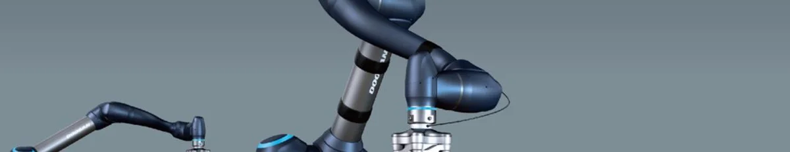
ROS2와RVIZ2 시뮬레이터를 이용한 로봇 구동 로봇URDF, XACRO,SDF 이용한 로봇 및 기동 자율 주행 로봇 시뮬레이션 학습 주제
RVIZ2 참고 학습 목표
- RViz2의 인터페이스와 기본 사용법을 이해하고, ROS2 환경에서 RViz2를 설정할 수 있다.
- 다양한 센서 데이터를 RViz2에서 시각화하고, 로봇의 상태 및 환경을 모니터링하는 방법 학습한다.
- RViz2의 고급 기능을 활용하여 실제 로봇과 상호 작용하는 환경에서 시뮬레이션을 수행할 수 있다.
ROS2 시각화 도구RVIZ2 참고 ROS2 개발 도구들
RVIZ2 참고 기타 개발 지원 도구
- CLI: Command-Line Instruction • GUI 없이 ROS에서 제공되는 명령어만으로도 로봇 제어 및 거의 모든 ROS 기능 소화 가능
- RQT • 그래픽 인터페이스 개발을 위한 Qt 기반 프레임워크 제공 • 노드와 그들 사이의 연결 정보 표시 (rqt_graph) • 인코더, 전압 같이 시간에 따라 변화하는 숫자를 플로 팅 (rqt_plot) • 데이터를 메시지 형태로 기록하고 재생 (rqt_bag)
- Rviz (ROS Visualization) • 강력한 2D, 3D 시각화 툴 • 로봇 시스템 이해에 도움
RQT 참고 RQT RQT : 시스템의 다양한 측면을 시각화하고 상호 작용할 수 있게해 주는 플러그인 기반의 프레임워크 주요 기능:
- 토픽 모니터링 및 발행
- 파라미터 서버 조작
- 노드 그래프 시각화
- 로그 뷰어
- 플롯 도구
-
이미지 뷰어 주요 플 로그인:
-
rqt_graph: 노드 토픽 연결을 그래프로 표시
- rqt_plot: 토픽 데이터를 실시간 그래프로 표시
- rqt_console: 로그 메시지 표시 및 필터링
- rqt_image_view: 이미지 토픽 시각화
-
rqt_publisher: 토픽 발행 인터페이스를 제공 RQT 참고 RQT Message Publisher 상단 메뉴에서 Plugins -> Topic -> Message Publisher ※ 만약 플러그인이 표시되지 않으면 rqt 관련 플러그인이 설치되지 않았을 수 있으니 설치. 토픽과 메시지 형식을 선택.
-
Topic Name: 게시할 토픽의 이름 (예: /my_topic)
- Message Type: 게시할 메시지의 타입 (예: std_msgs/msg/String) $ sudo apt install ros-humble-rqt-publisher
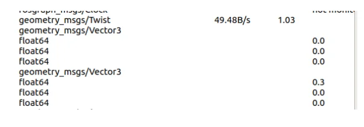
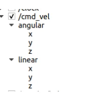
RQT 참고 RQT_plot
- 실시간 토픽 데이터 시각화 툴
-
Plugins -> Visualization -> Plot 예시: 터틀심 1. 터틀심, teleop_key, rqt 실행
-
rqt_plots 추가
- plot Topic에 /turtle1/cmd_vel/linear 입력
- teleop_key으로 작동하여 rqt_plot 그래프 확인 rqt_plot $ ros2 run turtlesim turtlesim_node $ ros2 run turtlesim turtle_teleop_key $ rqt
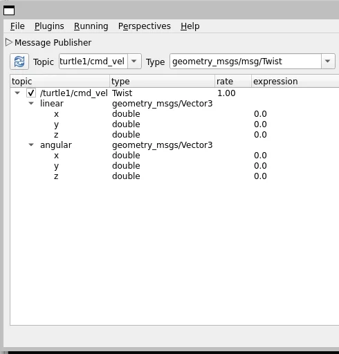
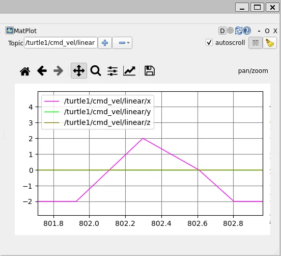
RQT 참고 RQT_IMAGE_VIEW rqt_image_view
- 카메라 또는 다른 이미지 센서가 퍼블리시하는 이미지를 실시간으로 확인
-
Plugins -> Visualization -> image_view ※ 만약 플러그인이 표시되지 않으면 rqt 관련 플러그인이 설치되지 않았을 수 있으니 설치. $ sudo apt update $ sudo apt install ros-humble-rqt-image-view
-
일반적으로 이미지 데이터는 sensor_msgs/msg/Image 타입
- 카메라 센서가 있는 경우 토픽 이름은 주로 /camera/image_raw와 같은 형식 ROS2 시각화 도구RVIZ2 참고 RVIZ2
ROS2 시각화 도구RVIZ2 참고 RVIZ2 특징
- 강력한 시각화 툴 • 로봇의 외형(URDF/XACRO 형식의 3D 모델), 위치, 자세 시각화 • IMU 관성 데이터 , 라이더의 거리 데이터, Depth Camera의 포인트 클라우드 데이터 등 다양한 데이터 시각화 • 지도(2D/3D) 시각화 • 토픽 데이터 시각화 • 계획된 동작을 표현
- 다른 ROS 툴과의 사용 • 내비게이션 • 원격 제어 • 디버깅 작업에 도움 ROS2 시각화 도구RVIZ2 참고 RVIZ2 설치 및 실생
설치 (ros2 humble 설치시 자동 설치됨)¶
※ 원격 접속을 위한 ubuntu Open ssh server 설치
실행¶
$ sudo apt install ros-humble-rviz2 $ rviz2 $ ros2 run rviz2 rviz2 또는 $ sudo apt install openssh-server $ sudo systemctl start ssh
- 설치 및 실행 ※ 원격 접속을 위한 윈도우 putty 프로그램 설치
Ubuntu 데스크톱 버전 필요¶
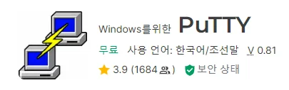
ROS2 시각화 도구RVIZ2 참고 RVIZ2 기본 인터페이스 Displays:
-
시각화할 항목을 선택, 설정하는 패널. Global Options:
-
전체 환경의 좌표계와 배경 색, 고정된 프레임을 설정
-
고정 프레임(fixed fram): 로봇의 모든 센서 및 데이터의 기준이 되는 좌표계 Tools:
-
카메라 이동, 목표 위치 설정 등의 도구 3D 뷰 포트
-
선택한 데이터를 시각적으로 표시해 주는 공간
-
로봇의 상태를 3D로 관찰 주요 패널 ROS2 시각화 도구RVIZ2 참고 RVIZ2 기본 용어 RViz2를 이해하기 위해 알아야할 기본 용어
-
고정 프레임 (Fixed Frame) • RViz2에서 모든 시각화 요소가 기준으로 삼는 좌표계 • 로봇의 기본 좌표계인 base_link 또는 세계 좌표계인 map을 사용
- TF (Transform Frames) • 각 좌표계 간의 관계를 정의하는 프레임 변환 정보 • RViz2는 tf2 라이브러리를 사용해 여러 좌표계 간의 변환을 시각화
- 토픽 (Topics) • ROS2에서 퍼블리셔가 데이터를 보내는 통신 채널 • RViz2는 특정 토픽에서 데이터를 구독하여 이를 시각화
ROS2 시각화 도구RVIZ2 참고 기본 Displays 구성 요소 Displays는 RViz2의 핵심 기능으로, 다양한 데이터를 시각화하기 위한 항목들 제공 주요 Displays 항목:
RobotModel - 로봇의 URDF 모델을 3D로 시각화. TF - 좌표 프레임을 표시 LaserScan - 라이다(LIDAR)에서 퍼블리시된 sensor_msgs/LaserScan 메시지를 시각화 PointCloud2 - 3D 포인트 클라우드 데이터를 시각화
Image - 카메라에서 퍼블리시된 이미지를 시각화 Odometry - 로봇의 위치 정보를 시각화 (nav_msgs/Odometry 메시지 사용) Map - 로봇이 생성한 2D 지도를 시각화(nav_msgs/OccupancyGrid 메시지 사용) Path - 로봇의 경로를 시각화(nav_msgs/Path 메시지 사용). 자동차 연동 시뮬레이션 참고 Rviz2에서 시각화가 가능한 센서 데이터 -라이다(LiDAR) 데이터 -시각화 방법: PointCloud2 디스플레이 -데이터 형식: sensor_msgs/PointCloud2 -특징: 3D 포인트 클라우드로 주변 환경을 표현 -카메라 이미지 -시각화 방법: Image 디스플레이 -데이터 형식: sensor_msgs/Image -특징: 2D 이미지 스트림 표시 -깊이 카메라 데이터 -시각화 방법: DepthCloud 디스플레이 -데이터 형식: sensor_msgs/Image (depth image) -특징: 깊이 정보를 색상으로 표현한 포인트 클라우드 -IMU (관성 측정 장치) 데이터 -시각화 방법: Imu 디스플레이 -데이터 형식: sensor_msgs/Imu -특징: 방향, 각속도, 선형 가속도를 화살표로 표현 -레이저 스캔 데이터 -시각화 방법: LaserScan 디스플레이 -데이터 형식: sensor_msgs/LaserScan -특징: 2D 평면상의 거리 측정 데이터를 점이나 선으로 표현 -GPS 데이터 -시각화 방법: Odometry 디스플레이 또는 커스 텀 마커 -데이터 형식: sensor_msgs/NavSatFix -특징: 위치 정보를 3D 공간상의 점으로 표현 -초음파 센서 데이터 -시각화 방법: Range 디스플레이 -데이터 형식: sensor_msgs/Range -특징: 거리 측정 값을 원뿔 형태로 표현 -관절 상태 (로봇 팔 등) -시각화 방법: RobotModel 디스플레이 -데이터 형식: sensor_msgs/JointState -특징: URDF 모델과 결합하여 로봇의 현재 자세 표현
ROS2 시각화 도구RVIZ2 참고 RVIZ2 주요 도구 모음(Toolbar)
- 2D Pose Estimate: 2D 포즈를 추정
- 2D Nav Goal: 2D 내비게이션 목표를 설정
-
Publish Point: 특정 지점의 좌표를 발행 -3D 시각화 환경에서 사용자가 선택한 특정 지점의 3D 좌표를ROS 토픽으로 발행(publish)
-
기본적으로 /clicked_point 토픽 발행 -메시지 타입은 geometry_msg/PointStamped RViz Navigation -geometry_msgs/PointStamped 메시지 타입은 특정 시간에 특정 위치를 나타내는 메시지입니다. -Header와 Point로 구성 -Header: 메시지의 프레임과 타임 스탬프 정보를 포함합니다. -Point: x, y, z 좌표로 위치를 나타냅니다. ROS2 시각화 도구RVIZ2 참고 RVIZ2 시각화 예시 TF 좌표계 변환
-
TF 프레임을 통해 로봇의 센서와 다양한 파트 간의 좌표 변환을 시각화
- 로봇의 다양한 파트(링크)들의 움직임과 연결 상태 확인
-
TF는 좌표계 간의 관계를 주기에 따라 보냄(topic publish), 로봇의 상태를 실시간으로 추적 TF 시각화 방법
-
- TF Displays 항목을 추가
-
- tf2에 의해 퍼블리시되는 모든 좌표 변환 확인
-
- 로봇의 기준 좌표(base_link 등)에서 센서 좌표계나 다른 파트로 변환되는 과정을 시각적으로 이해 ROS2 시각화 도구RVIZ2 참고 카메라 시각화
-
디스플레이에 카메라 타입 추가
- 카메라 타입 토픽에서 sensor_msgs/msg/Image 선택 Rviz2에 표시된 카메라 이미지
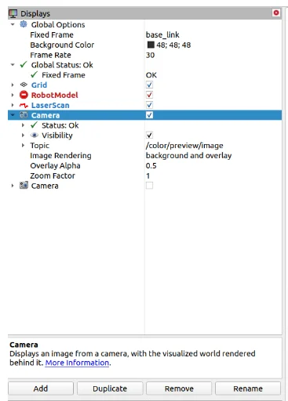
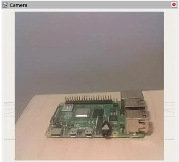
ROS2 시각화 도구RVIZ2 참고 카메라 시각화 과제 import rclpy from rclpy.node import Node from sensor_msgs.msg import Image from cv_bridge import CvBridge import cv2 class VideoPublisher(Node): def init(self): super().init('video_publisher') self.publisher_ = self.create_publisher(Image, 'video_frames', 10) timer_period = 0.033 # 30FPS를 위한 타이머 주기 self.timer = self.create_timer(timer_period, self.timer_callback)
# 비디오 캡처 객체 생성 (파일 또는 카메라)
# self.cap = cv2.VideoCapture(0) # 웹캠 사용시
self.cap = cv2.VideoCapture('your_video.mp4') # 비디오 파일 사용 시
self.bridge = CvBridge()
def timer_callback(self):
ret, frame = self.cap.read()
if ret:
# 프레임이 끝났다면 다시 시작
if frame is None:
self.cap.set(cv2.CAP_PROP_POS_FRAMES, 0)
ret, frame = self.cap.read()
# OpenCV 이미지를 ROS 메시지로 변환
msg = self.bridge.cv2_to_imgmsg(frame, encoding='bgr8')
self.publisher_.publish(msg)
self.get_logger().info('Publishing video frame')
def __del__(self):
self.cap.release()
def main(args=None): rclpy.init(args=args) video_publisher = VideoPublisher()
try:
rclpy.spin(video_publisher)
except KeyboardInterrupt:
pass
finally:
video_publisher.destroy_node()
rclpy.shutdown()
if name == 'main': main()
ROS2 시각화 도구RVIZ2 참고 카메라 시각화 과제 def update_image(self, q_image): # 이미지 크기를 윈도우에 맞게 조정 scaled_image = q_image.scaled( self.image_label.size(), Qt.KeepAspectRatio, Qt.SmoothTransformation ) self.image_label.setPixmap(QPixmap.fromImage(scaled_image)) def closeEvent(self, event): self.ros2_subscriber.destroy_node() rclpy.shutdown() event.accept() def main(): app = QApplication(sys.argv) window = MainWindow() window.show() sys.exit(app.exec_()) if name == 'main': main() class MainWindow(QMainWindow): def init(self): super().init() self.setWindowTitle("ROS2 Video Subscriber") self.setGeometry(100, 100, 800, 600) # 중앙 위젯 설정 central_widget = QWidget() self.setCentralWidget(central_widget) layout = QVBoxLayout(central_widget) # 이미지를 표시할 라벨 self.image_label = QLabel() self.image_label.setAlignment(Qt.AlignCenter) layout.addWidget(self.image_label) # ROS2 초기화 rclpy.init(args=None) self.ros2_subscriber = ImageSubscriber()
# Signal Emitter 설정
self.signal_emitter = ROS2SignalEmitter()
self.signal_emitter.image_received.connect(self.update_image)
# ROS2 스핀을 위한 타이머
self.timer = QTimer()
self.timer.timeout.connect(self.spin_once)
self.timer.start(33) # 30 FPS
def spin_once(self):
rclpy.spin_once(self.ros2_subscriber, timeout_sec=0)
if hasattr(self.ros2_subscriber, 'current_frame'):
# OpenCV 이미지를 Qt 이미지로 변환
height, width, channel = self.ros2_subscriber.current_frame.shape
bytes_per_line = 3 * width
q_image = QImage(
self.ros2_subscriber.current_frame.data,
width,
height,
bytes_per_line,
QImage.Format_RGB888
).rgbSwapped()
self.signal_emitter.image_received.emit(q_image)
import sys import rclpy from rclpy.node import Node from sensor_msgs.msg import Image from cv_bridge import CvBridge import cv2 from PyQt5.QtWidgets import QApplication, QMainWindow, QLabel, QVBoxLayout, QWidget from PyQt5.QtCore import Qt, QTimer, pyqtSignal, QObject from PyQt5.QtGui import QImage, QPixmap class ROS2SignalEmitter(QObject): image_received = pyqtSignal(QImage) class ImageSubscriber(Node): def init(self): super().init('image_subscriber') self.subscription = self.create_subscription( Image, 'video_frames', self.listener_callback, 10) self.bridge = CvBridge()
def listener_callback(self, data):
self.current_frame = self.bridge.imgmsg_to_cv2(data, desired_encoding='bgr8')
ROS2 시각화 도구RVIZ2 참고 IMU 데이터 시각화 IMU 데이터를 구독 방향(쿼터 니 언)을 오일러 각도로 변환 각 속도, 선형 가속도 출력 로봇의 자세 추정 다른 센서 데이터와 융합하여 더 복잡한 작업을 수행 가능
쿼터니언을 오일러 각도로 변환¶
orientation_q = msg.orientation orientation_list = [ orientation_q.x, orientation_q.y, orientation_q.z, orientation_q.w] (roll, pitch, yaw) = euler_from_quaternion(orientation_list)
ROS2 시각화 도구RVIZ2 참고 RVIZ2 시각화 예시
- "LaserScan" 항목 확장
- "Topic" 필드 클릭
-
드롭 다운 메뉴에서 "/scan" 토픽 선택 $ cd ~/ros2_ws/src $ git clone https://github.com/Slamtec/sllidar_ros2.git $ cd ~/ros2_ws $ rosdep install --from-paths src --ignore-src -r -y $ colcon build --symlink-install $ source ~/ros2_ws/install/setup.bash $ sudo chmod 666 /dev/ttyUSB0 $ ros2 launch sllidar_ros2 sllidar_launch.py
-
RPLIDAR 데이터 시각화 1) Fixed Frame 변경 Global Options > Fixed Frame = laser 2) Axes 추가 및 설정 RViz 좌측 하단의 Add에서 Axes 추가 (Length 및 Radius 변경은 옵션) 3) LaserScan 추가 및 설정 RViz 좌측 하단의 Add에서 LaserScan 추가 (Topic 지정 필수, Color, Color Transformer 등은 옵션) • 라이다 센서 데이터를 2D 평면상에 표시 • 주변 장애물 시각적으로 확인 ROS2 시각화 도구RVIZ2 참고 RViz2 구성 저장 및 로드
- 환경 저장
- 환경 불러오기 • File -> Save Config As • 일반적으로 config 디렉토리에 저장 • Launch 파일에서 실행할 때 불러오는 방법 .rviz 파일은 RViz2(ROS Visualization Tool)의 설정 파일입니다. 이 파일은 RViz2의 사용자 인터페이스 설정, 로드된 플러그인, 시각화 옵션 등 RViz2의 전체 구성을 저장 > rviz2 -d your_config.rviz • RViz2 실행 시 -d 옵션으로 .rviz 파일을 지정 참고 로봇Description 패키지
프로젝트 기초 참고 로봇 패키지 만들기 실습
- URDF Package 생성하기
- 연관 폴더 만들기
- src/urdf_tutorial 폴더 아래 다음 두 폴더를 추가
- urdf: URDF 파일을 저장할 폴더
- launch: ROS2 실행 launch 스크립트를 저장할 폴더 $ mkdir -p ~/ws_urdf/src $ cd ~/ws_urdf/src $ ros2 pkg create --build-type ament_python urdf_tutorial $ cd .. $ colcon build –symlink-install $ cd src $ cd urdf_tutorial $ mkdir urdf $ mkdir launch $ mkdir config
- rm –rdf ./build ./install ./log
프로젝트 기초 참고
- setup.py 두 폴더가 컴파일에 포함될 수 있도록 'src/urdf_tutorial/setup.py'를 아래와 같이 편집 import os from glob import glob from setuptools import setup package_name = 'urdf_tutorial' setup( name=package_name, version='0.0.0', packages=[package_name], data_files=[ ('share/ament_index/resource_index/packages', ['resource/' + package_name]), ('share/' + package_name, ['package.xml']), (os.path.join('share', package_name, 'launch'), glob('launch/.launch.py')), (os.path.join('share', package_name, 'urdf'), glob('urdf/.xacro')) ], install_requires=['setuptools'], zip_safe=True, maintainer='daeho', maintainer_email='daeho@todo.todo', description='TODO: Package description', license='TODO: License declaration', tests_require=['pytest'], entry_points={ 'console_scripts': [ ], }, ) 로봇 패키지 만들기 실습
프로젝트 기초 참고 ‘src/urdf_tutorial/urdf/robot_1.xacro’ 파일을 만들고 아래와 같이 편집
- base_link: 가상의 링크
- body: 가로, 세로, 높이 각각 1m인 상자
-
body_joint: base_link와 body를 연결하는 joint
-
로봇 모델 만들기
<parent link="base_link"/>
프로젝트 기초 참고 ‘src/urdf_tutorial/launch/robot_1.launch.py’ 파일을 만들고 아래와 같이 편집
- 런치 파일 만들기 import os from ament_index_python.packages import get_package_share_directory from launch import LaunchDescription from launch.substitutions import LaunchConfiguration from launch.actions import DeclareLaunchArgument from launch_ros.actions import Node import xacro def generate_launch_description(): use_sim_time = LaunchConfiguration('use_sim_time') pkg_path = os.path.join(get_package_share_directory('urdf_tutorial')) xacro_file = os.path.join(pkg_path,'urdf','robot_1.xacro') robot_description = xacro.process_file(xacro_file) params = {'robot_description': robot_description.toxml(), 'use_sim_time': use_sim_time} return LaunchDescription([ DeclareLaunchArgument( 'use_sim_time', default_value='false', description='Use sim time'), Node( package='robot_state_publisher', executable='robot_state_publisher', output='screen', parameters=[params]) ]) 로봇 패키지 만들기 실습
프로젝트 기초 참고
-
빌드 및 소싱 첫 번째 터미널에서 아래 명령을 실행해서 컴파일 및 ‘robot_1.launch.py’ 파일을 실행
-
두 번째 터미널에서 아래 명령을 실행해서 Rviz를 실행 $ cd ~/ws_urdf $ colcon build --symlink-install $ source install/setup.bash $ ros2 launch urdf_tutorial robot_1.launch.py $ cd ~/ws_urdf/ws_urdf $ source install/setup.bash $ rviz2 로봇 패키지 만들기 실습
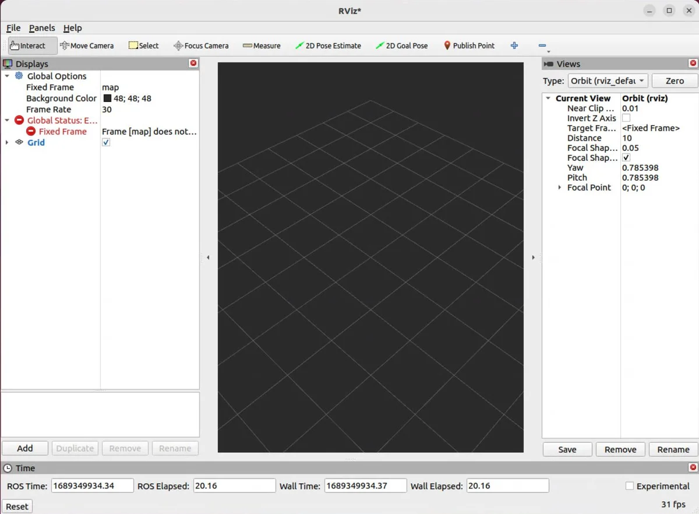
프로젝트 기초 참고
- rviz2 설정 Display > Global Option > ‘Fixed Frame’을 ‘base_link’로 변경 왼쪽 하단의 ‘Add’ > ‘TF’ > ‘Ok’ 로봇 패키지 만들기 실습
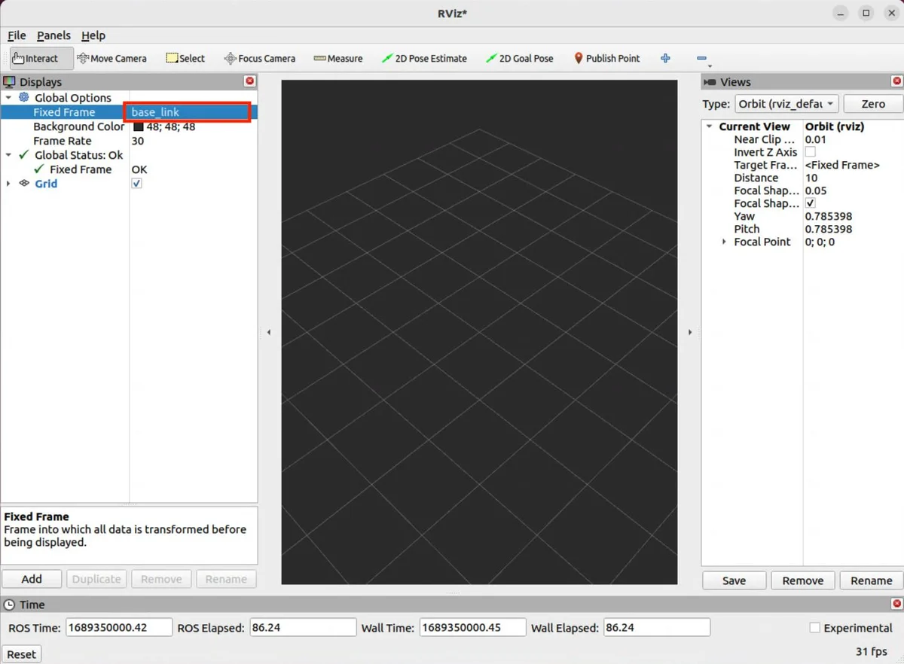
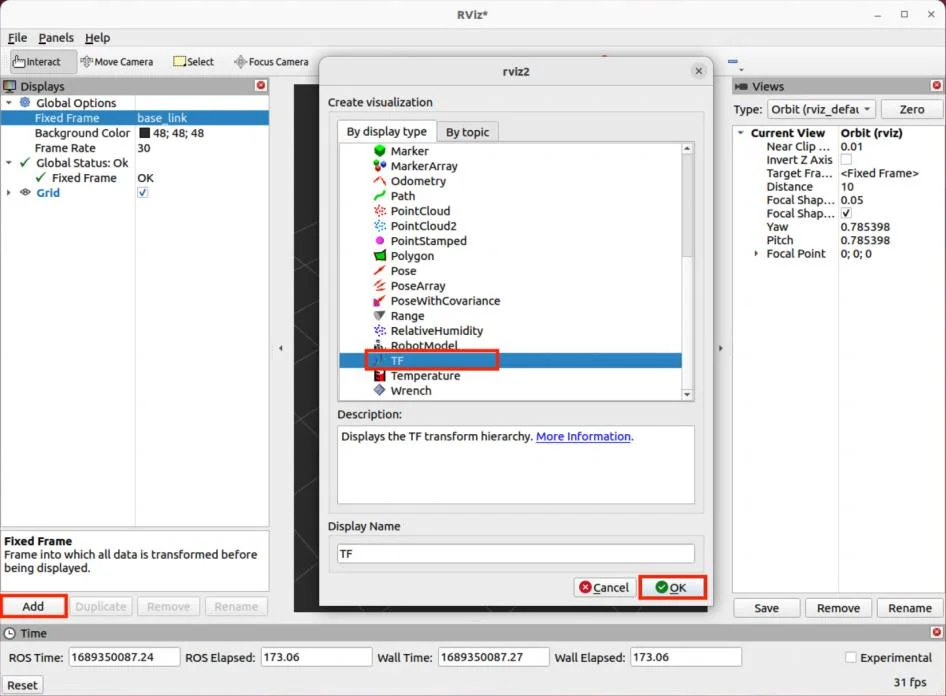
주제2.1 기초 참고
- TF 보기 TF의 하위 항목 중 ‘Show Names’를 선택 중앙에 ‘base_link’와 ‘body’가 겹쳐진 상태로 보이는 것 확인 왼쪽 하단의 ‘Add’ > ‘RobotModel’ > ‘Ok’ 로봇 패키지 만들기 실습
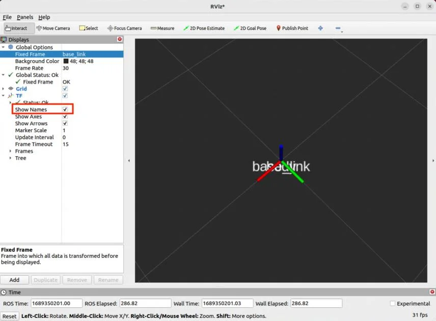
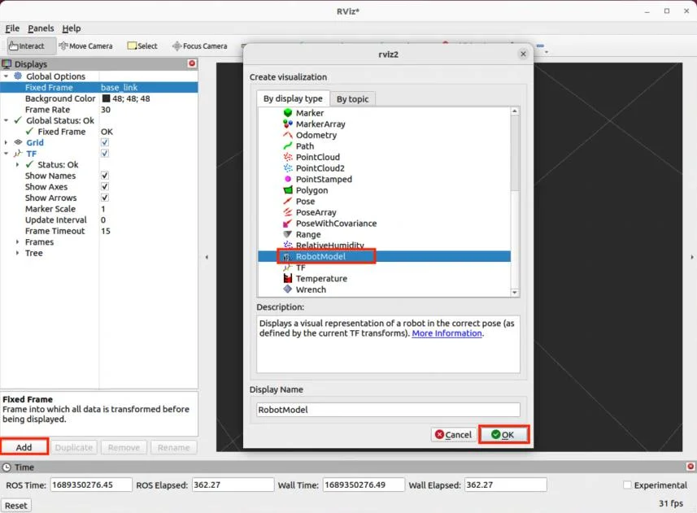
주제2.1 기초 참고
- 로봇 모델 보기 RobotModel의 하위 항목 중 ‘Description Topic’을 ‘/robot_description’으로 변경 'File' 메뉴에서 'Save Config As'를 선택 로봇 패키지 만들기 실습 로봇 모델 불러오기 rviz2 –d ./config/robot.rviz
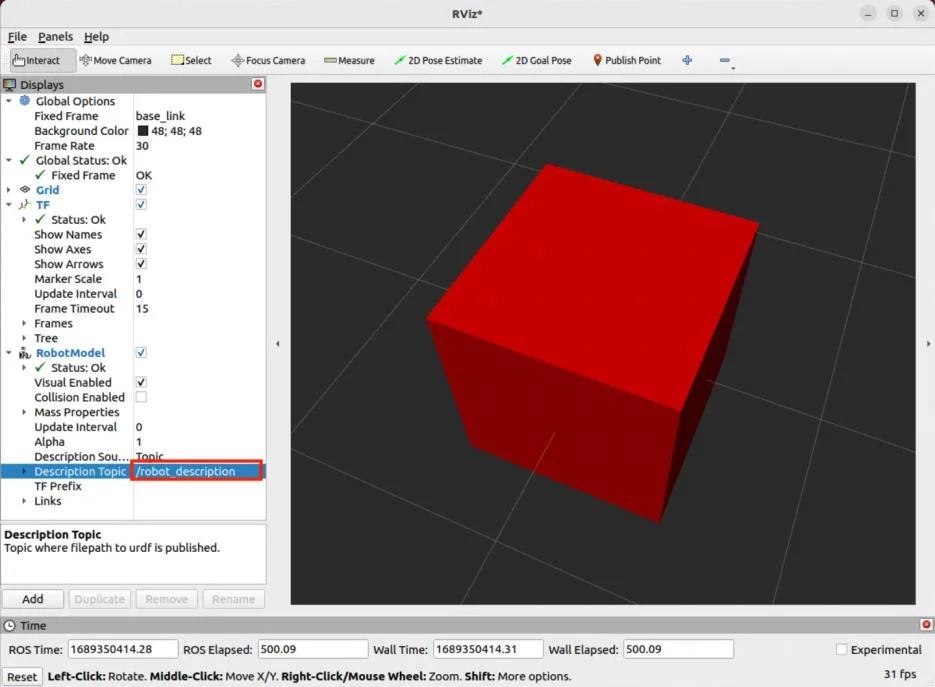
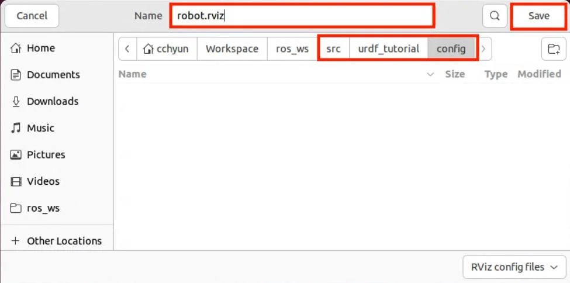
주제2.1 기초 참고
-
노드 및 토픽 확인 세 번째 터미널에서 아래 명령을 실행해서 rqt_graph를 실행
-
/robot_state_publisher: ‘robot.launch.py’를 이용해서 실행한 Node
-
/transform_listner_Impl: rviz2에서 실행한 Node
-
‘/robot_state_publisher’ Node는 ‘/transform_listner_Impl’ Node에게 ‘/tf’, ‘/tf_static’ 두 개의 topic을 전달 $ rqt_graph 로봇 패키지 만들기 실습
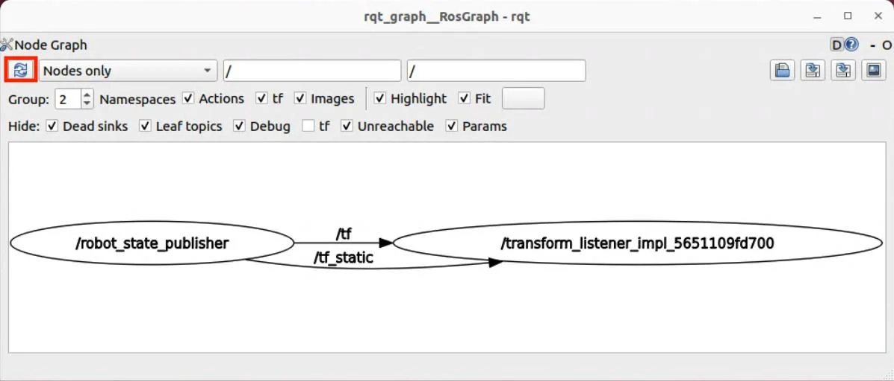
주제2.1 기초 참고
-
정육면체의 색 변경 ‘src/urdf_tutorial/urdf/robot_1.xacro’ 파일을 아래와 같이 수정
-
material white: 위쪽에 흰색을 표현하는 white material을 선언 색상은 rgba 모두 1로 지정 (색상의 범위: 0 ~ 1 )
-
body link material: body link에 위에서 지정한 white material을 지정 변경된 값을 반영하기 위해 첫 번째 터미널에서 ‘CTRL+C’ 키를 입력해서 ROS2를 종료한 후 명령을 수행
주제2.1 기초 참고 메니퓨 레이 터 모델링
로봇description 참고 기초 지식
- URDF, SDF, SRDF,XACRO • 로봇의 기구 학적 구조(모델)를 설명하는 XML 기반 포맷 • 주로 로봇의 링크, 조인트, 메시, 물리적 속성(질량, 관성 등) 등을 정의 • 로봇의 물리적 모델 정의: 로봇의 구조를 텍스트로 설명 • 각 링크(로봇의 고정된 부분)와 조인트(회전 또는 직선 운동을 하는 부분)를 정의 • 충돌 모델: 로봇이 다른 물체와 충돌할 때 사용하는 단순한 충돌 체적(보통 상자나 구 형태)을 정의 • 시각적 모델: 로봇의 시각적 표현을 위한 3D 메시(주로 STL, COLLADA) 파일 경로를 정의 • ROS 환경에서 로봇을 표현: RViz와 같은 시뮬레이터에서 로봇을 시각화하는 데 URDF 파일 사용 • 로봇의 구조, 동작, 환경 등을 정의하기 위한 XML 기반의 파일 포맷 및 확장자.
- URDF
로봇description 참고 기초 지식 6축(DOF) 매니퓰레이터 5축(DOF) 매니퓰레이터 링크(Link)
- description :링크의 이름, 외형, 무게(mass, kg), 관성 모 멘트(Kg.m^2)
-
외형: 주로 원통, 원뿔, 직육면체 등의 간단한 모형 모델 사용 복잡한 구조는 메쉬 (mesh)를 표현할 수 있는 stl, dae(collda) 포맷을 사용 조인트(Joint)
-
description : 조인트의 이름, 종류, 운동의 기준 축, 연결하는 링크, 최소, 최대 동작 값(각도, 선형 움직임), 조인트에 부여되는 힘 / 속도
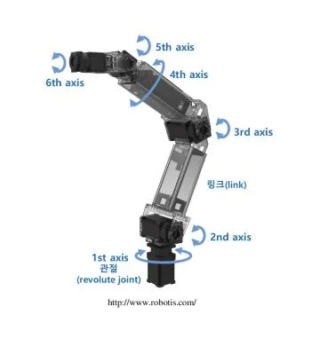
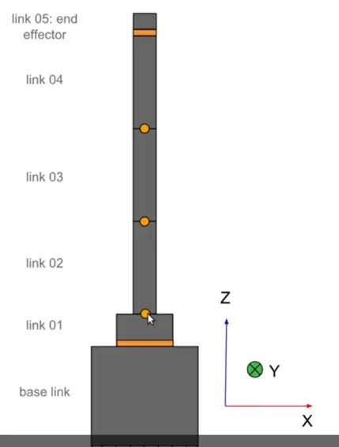
로봇description
참고
기초 지식
기준 좌표를 흔히 Frame이라고 하는데, URDF에서는 조인트에 이 Frame을 둔다.
Frame을 기준으로 조인트 사이의 위치 관계를 상대적인 값들로 설정하거나 링크를 표현하는 여러 태그
들의 중심 위치를 설정한다.
URDF에서는
로봇description
참고
기초 지식
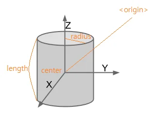
로봇description
참고
기초 지식
링크(Link) URDF에서
- 로봇의 조인트를 정의하는 데 사용
- 각 조인트는 두 링크를 연결
- 어떤 방식으로 움직일 수 있는 지 정의
- fixed (고정): 움직임이 허용되지 않는 관절(link)이다
- revolute (회전): 선풍기의 좌우 회전과 같이 일정 각도 범위를 회전
- continuous (연속): 자동차 바퀴처럼 연속 회전을 하는 관절
-
prismatic (프리즘): 단일 축에 대해 선형으로 미끄러지는 관절 최대, 최소 위치 제한 정의 필요
-
floating (자유): 6차원 이동 및 회전을 허용하는 관절
- planar (평면): 한 평면에 수직으로 이동 및 회전할 수 있는 관절 조인트(Joint) URDF 에서 지원하는 조인트 종류(type)
로봇description 참고 URDF – JOINT 예시
-
, 부모 링크(parent link)와 자식 링크(child link)의 이름 지정 (기저에 가까운 링크가 부모 링크) -
회전 축을 정의 축은 로봇의 기준 좌표를 기준으로 정의 회전 운동의 방향을 결정. -
z 값만 설정 옆 그림의 경우에는 선풍기 목 부분 z 축 기준으로 회전 -
조인트 동작에 대한 최소, 최대(lower, upper) 제한 사항을 설정. 조인트에 부여되는 힘(effort, 단위: N), 속도(단위: radian/s)의 제한 값 설정 주제2.1 기초 참고 URDF 예시 -
parent : 기준 링크 결정 (기저에 가까운 링크)
-
origin: parent link 좌표계에서 조인트 위치, 회전 (rpy- 기울어진 정도, xyz- 위상 차이)
-
axis: 어떤 축을 기준으로 child 링크를 움직일 것인지 나타냄 (위 코드에서 y축을 기준으로 움직이므로 xyz=‘0 1 0’으로 정의
- URDF 파일 확장자는 일반적으로 .urdf 또는 .xacro
- 파라미터로 로봇 이름 확인 가능(예: ros2 param get /robot_state_publisher robot_name)
SLAM 참고 메내퓨 레이 터 모델링
주제2.1 기초 참고 메니퓨 레이 터 패키지 - 생성
-
로봇의 모델링 정보 을 받음 패키지 생성 매니 플레이 터의 기본 정보를 URDF로 작성해 보자. 로봇의 모델링 정보를 담은 패키지를 로봇 명_descriptio으로 이름 만들기 $ cd ~/robot_ws/src $ ros2 pkg create testbot_description --build-type ament_python --dependencies urdf $ cd testbot_description $ mkdir urdf rviz $ cd urdf $ vim testbot.urdf
-
urdf 폴더 생성 후 urdf 파일 생성
주제2.1 기초 참고 메니퓨 레이 터 패키지 - URDF testbot.urdf 파일
주제2.1 기초
참고
주제2.1 기초
참고
주제2.1 기초 참고 메니퓨 레이 터 패키지 - 런치 파일 생성
- check_urdf 나 urdf_to_graphiz 와 같은 명령어를 통해서 작성한 URDF syntax나 렌더링 된 모습 확인
- testbot_description 패키지 폴더로 이동해 testbot.launch.py 파일 생성
- 런치 파일 생성 $ cd ~/robot_ws/src/testbot_description $ mkdir launch $ cd launch $ vim testbot.launch.py import os from ament_index_python.packages import get_package_share_directory from launch import LaunchDescription from launch_ros.actions import Node def generate_launch_description(): rviz_display_config_file = os.path.join( get_package_share_directory('testbot_description'), 'rviz', 'testbot.rviz') urdf_file = os.path.join( get_package_share_directory('testbot_description'), 'urdf', 'testbot.urdf') with open(urdf_file, 'r') as infp: robot_description_file = infp.read() ld = LaunchDescription() robot_state_publisher = Node( package='robot_state_publisher', executable='robot_state_publisher', parameters=[ {'use_sim_time': False}, {'robot_description': robot_description_file} ],output='screen') joint_state_publisher_gui = Node( package='joint_state_publisher_gui', executable='joint_state_publisher_gui', output='screen') rviz2 = Node( package='rviz2', executable='rviz2', arguments=['-d', rviz_display_config_file], output='screen') ld.add_action(robot_state_publisher) ld.add_action(joint_state_publisher_gui) ld.add_action(rviz2) return ld ※ 복붙용 testbot.launch.py 코드 모두 선택(ctrl+a) 후 복사
주제2.1 기초 참고 URDF를 담은 robot_description 파라미터와 joint_state_publisher, robot_state_publisher, rviz2 노드로 구성 import os from ament_index_python.packages import get_package_share_directory from launch import LaunchDescription from launch_ros.actions import Node def generate_launch_description(): rviz_display_config_file = os.path.join( get_package_share_directory('testbot_description'), 'rviz', 'testbot.rviz') urdf_file = os.path.join( get_package_share_directory('testbot_description'), 'urdf', 'testbot.urdf') with open(urdf_file, 'r') as infp: robot_description_file = infp.read() ld = LaunchDescription() robot_state_publisher = Node( package='robot_state_publisher', executable='robot_state_publisher', parameters=[ {'use_sim_time': False}, {'robot_description': robot_description_file} ], output='screen') joint_state_publisher_gui = Node( package='joint_state_publisher_gui', executable='joint_state_publisher_gui', output='screen') rviz2 = Node( package='rviz2', executable='rviz2', arguments=['-d', rviz_display_config_file], output='screen') ld.add_action(robot_state_publisher) ld.add_action(joint_state_publisher_gui) ld.add_action(rviz2) return ld 메니퓨 레이 터 패키지 - 런치 파일 생성
주제2.1 기초 참고 setup.py 파일의 데이터 파일에 Launch파일과urdf 파일, rviz 파일 추가 import os from glob import glob from setuptools import find_packages, setup package_name = 'testbot_description' setup( name=package_name, version='0.0.0', packages=find_packages(exclude=['test']), data_files=[ ('share/ament_index/resource_index/packages', ['resource/' + package_name]), ('share/' + package_name, ['package.xml']), (os.path.join('share', package_name, 'launch'), glob('launch/.launch.py')), (os.path.join('share', package_name, 'urdf'), glob('urdf/.urdf')), (os.path.join('share', package_name, 'rviz'), glob('rviz/*.rviz')) ], install_requires=['setuptools'], zip_safe=True, maintainer='ABC', maintainer_email='ABC@todo.todo', description='TODO: Package description', license='TODO: License declaration', tests_require=['pytest'], entry_points={ 'console_scripts': [ ], }, ) 메니퓨 레이 터 패키지 – setup.py 파일 편집 $ vim ~/robot_ws/src/testbot_description/setup.py
주제2.1 기초 참고 메니퓨 레이 터 패키지– Launch 파일 실행 $ cd ~/robot_ws/src/testbot_description $ colcon build --symlink-install $ source install/setup.bash $ ros2 launch testbot_description testbot.launch.py
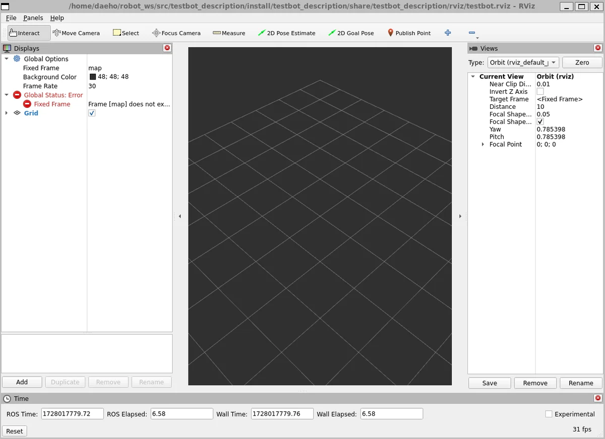
주제2.1 기초 참고 메니퓨 레이 터 패키지– Rviz2 설정 Displays -> Global Options -> Fixed Frame : base Add -> TF Add -> RobotModel Displays -> RobotModel -> Description Topic : /robot_description
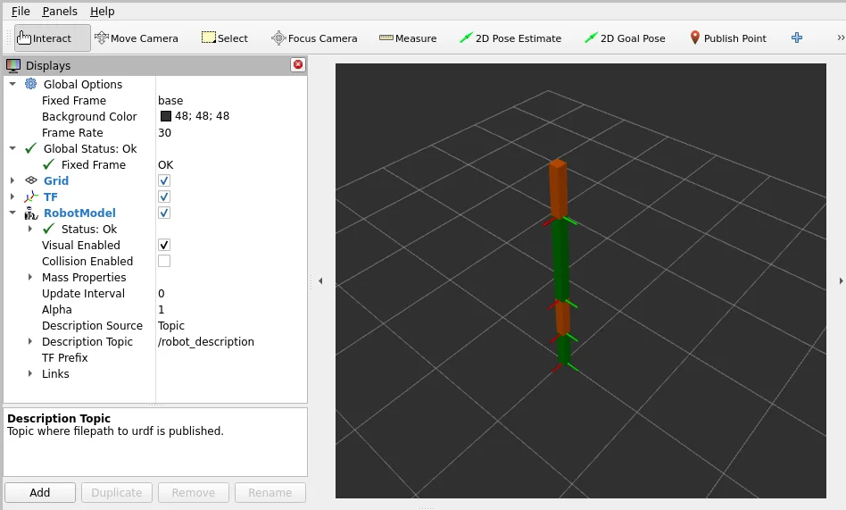
주제2.1 기초 참고 메니퓨 레이 터 패키지– 시각화 확인 Joint State Publish gui에서 joint 값을 바꿔 가면서 움직임 확인
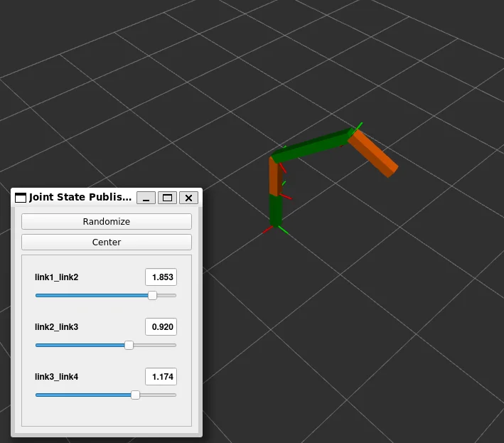
주제2.1 기초 참고 메니퓨 레이 터 패키지 – 노드 robot_description 토픽으로 URDF가 주어지면 URDF의 joint 값을 joint_state_publisher_gui로 받아 /joint_states 토픽으로 퍼블리시 joint_state_publisher : robot_state_publisher : URDF의 로봇 정보와 joint_state 토픽 정보 활용 계산한 TF 정보를 /tf, /tf_static 토픽으로 퍼블리시
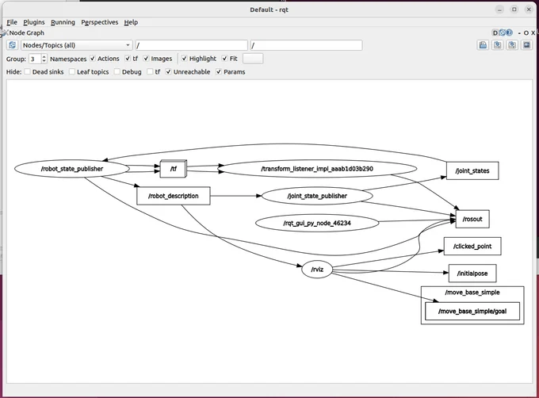
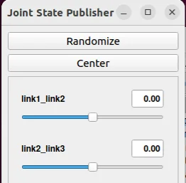
주제2.1 기초 참고 메니퓨 레이 터 패키지 – 토픽 /tf (tf2_msgs/msg/TFMessage) : 로봇의 움직일 수 있는 조인트 정보 /tf_static (tf2_msgs/msg/TFMessage) : 로봇의 정적 조인트 정보 /robot_description (std_msgs/msg/String) : 로봇 URDF에 대한 String 값 robot_description parameter에 값이 설정되면 이 토픽으로 republish 하여 동적인 정보도 전달 /joint_states (sensor_msgs/JointState) : 시스템에 있는 모든 움직이는 조인트 상태 값
주제2.1 기초 참고 Urdf 명령어 check_urdf 명령어로 작성한 URDF의 문법적 오류 및 각 링크의 연결 관계를 확인 가능 다이어그램으로 표현 .gv 파일과 .pdf 파일 생성 링크와 조인트와의 관계, 각 조인트와 조인트 사이의 상대 좌표 변환을 한 눈에 확인 urdf_to_graphiz check_urdf $ check_urdf ~/robot_ws/src/testbot_description/urdf/testbot.urdf $ urdf_to_graphiz ~/robot_ws/src/testbot_description/urdf/testbot.urdf
SLAM 참고 차동 이동 로봇 모델링
자동차 연동 시뮬레이션 참고 패키지 생성 및 준비
- car_tutorial package 생성 및 빌드
- 다음 4개의 폴더를 생성 $ mkdir –p ~/car_ws/src $ cd ~/car_ws/src/ $ ros2 pkg create --build-type ament_python car_tutorial $ colcon build –symlink-install $ cd ~/car_ws/src/car_tutorial $ mkdir urdf launch config world
자동차 연동 시뮬레이션 참고 의존성 선언
-
package.xml 파일 편집
-
ROS 2 빌드 시스템과 패키지 관리자에게 필요한 모든 정보를 제공
- 패키지 간의 의존성을 해결하고, 빌드 순서를 결정하며, 패키지에 대한 메타 데이터를 제공 •빌드 의존성:
•실행 의존성: •빌드 및 실행 의존성: src/car_tutorial/package.xml 자동차 연동 시뮬레이션 참고 패키지 메타 데이터 종속성 정의 Python의 setuptools를 사용하여 패키지의 메타 데이터와 종속성 정의 src/car_tutorial/setup.py •패키지 정보 정의 •이름, 버전, 설명 등의 메타 데이터를 지정 •종속성 선언 •패키지가 필요로 하는 다른 ROS 2 패키지나 Python 라이브러리를 명시 •설치 대상 지정 •실행 파일, Python 모듈, 데이터 파일 등 패키지에 포함될 항목들을 정의 •빌드 설정 •컴파일이 필요한 경우 빌드 프로세스를 구성 이 파일은 colcon 빌드 시스템에 의해 사용되어 패키지를 올바르게 빌드하고 설치 ROS 2 개발에서 setup.py는 package.xml과 함께 패키지 구성의 핵심 요소 자동차 연동 시뮬레이션 참고 자동차 모델링 src/car_tutorial/urdf/car.xacro \({pi/2} 0 0" /> <axis xyz="0 0 1"/> </joint> <link name="left_wheel"> <visual> <geometry> <cylinder radius="0.03" length="0.03"/> </geometry> <material name="blue"/> </visual> <collision> <geometry> <cylinder radius="0.03" length="0.03"/> </geometry> </collision> </link> <!-- RIGHT WHEEL LINK --> <joint name="right_wheel_joint" type="continuous"> <parent link="base_link"/> <child link="right_wheel"/> <origin xyz="0 -0.065 0" rpy="\){pi/2} 0 0" />
자동차 연동 시뮬레이션 참고 런치 파일 ROS 2의 launch 파일은 여러 노드와 그 구성을 한 번에 시작할 수 있게해 주는 도구 import os from ament_index_python.packages import get_package_share_directory from launch import LaunchDescription from launch_ros.actions import Node import xacro def generate_launch_description(): package_name = 'car_tutorial' # robot_state_publisher pkg_path = os.path.join(get_package_share_directory(package_name)) xacro_file = os.path.join(pkg_path, 'urdf', 'car.xacro') robot_description = xacro.process_file(xacro_file) params = {'robot_description': robot_description.toxml(), 'use_sim_time': False} rsp = Node( package='robot_state_publisher', executable='robot_state_publisher', output='screen', parameters=[params], ) # rviz2 rviz = Node( package='rviz2', executable='rviz2', name='rviz2', output='screen', arguments=['-d', 'src/car_tutorial/config/car.rviz'], ) return LaunchDescription( [ rsp, rviz, ] )
여기에 노드와 기타 launch 요소들을 정의¶
모델 정의 파일 지정¶
robot_state_publisher 실행 노드 정의, 파라미터로¶
robot_description 을 선언
rviz2실행 노드 정의¶
노드 리턴¶
자동차 연동 시뮬레이션 참고 런치 파일– 추가 기능 from launch.actions import DeclareLaunchArgument from launch.substitutions import LaunchConfiguration DeclareLaunchArgument('use_sim_time', default_value='false'), Node( # ... parameters=[{'use_sim_time': LaunchConfiguration('use_sim_time')}] ) from launch.conditions import IfCondition Node( # ... condition=IfCondition(LaunchConfiguration('condition_var')) ) 파라미터 설정 조건부 실행
자동차 연동 시뮬레이션 참고 런치 파일– 추가 기능 다른 launch 파일 포함 from launch.actions import IncludeLaunchDescription from launch.launch_description_sources import PythonLaunchDescriptionSource IncludeLaunchDescription( PythonLaunchDescriptionSource(['/path/to/other/launch/file.launch.py']) ) 기타: 이벤트 헨들러, 그룹화
자동차 연동 시뮬레이션 참고 빌드 및 실행 $ cd ~/ws_car/ $ colcon build --symlink-install $ source install/setup.bash $ ros2 launch car_tutorial fake.launch.py - RobotModel의 'Description Topic'을 '/robot_description'으로 설정하면 아래와 같이 모델이 보임. - 'Status' Error가 발생하는데 이유
- 두 개의 Joint (left_wheel_joint, right_wheel_joint)에 대한 /joint_states Topic을 수신하지 못 했기 때문.
- 새로운 창에서 joint_state_publisher_gui 수행 $ ros2 run joint_state_publisher_gui joint_state_publisher_gui
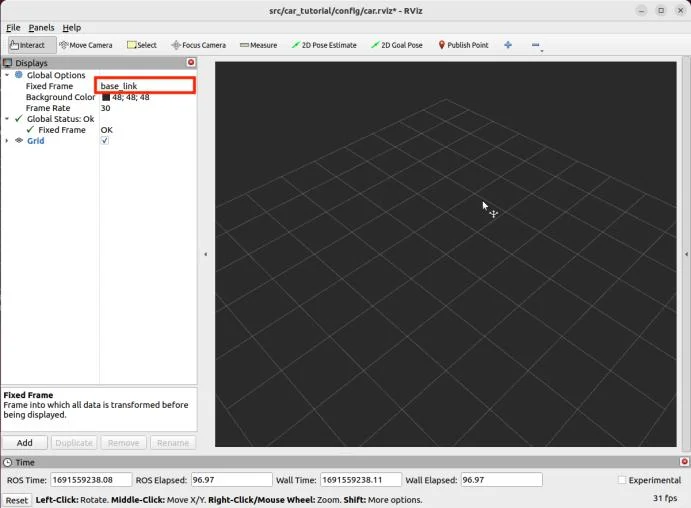
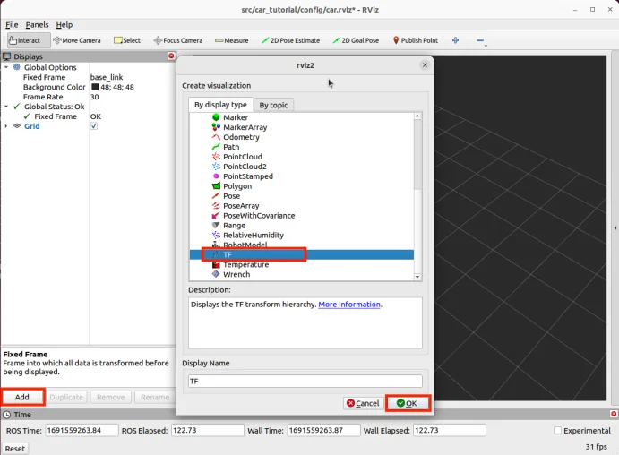
자동차 연동 시뮬레이션 참고 이미지 보기와 설정 저장 - 'Add' 버튼을 누른 후 뜨는 팝업에서 Image를 선택 후 'Ok' 버튼을 눌러 Image를 추가 - 메뉴에서 File >> Save Config As를 선택 후 뜨는 팝업에서 현재 설정 'src/car_tutorial/config/car.rviz’에 저장
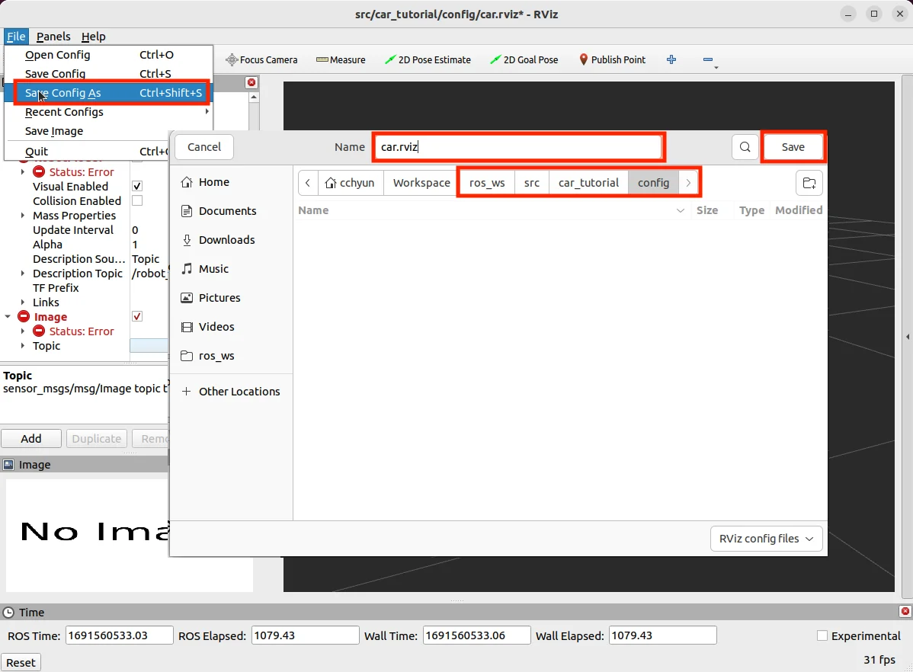
SLAM 참고 자동차 연동 시뮬레이션
자동차 연동 시뮬레이션 참고 차 동 이동 로봇 시뮬레이션
-
ROS에 자동차를 제어하고 Rviz로 확인하기 위한 최소의 컨트롤러 구성 요소
-
Keyboard Controller: 자동차의 방향/속도를 제어하는 명령을 Topic 퍼블리쉬
- Real Driver: 자동차에 방향/속도를 제어하는 명령을 보내고 실제 자동차의 방향/속도의 측정 값 퍼블리쉬 카메라 화면 정보를 수신해서 Topic 퍼블리쉬
- Odometry: 자동차의 방향/속도의 측정 값을 이용 실제 자동차의 위치를 계산 오돔 데이터와 TF 퍼블리쉬 실제 자동차 가상 자동차
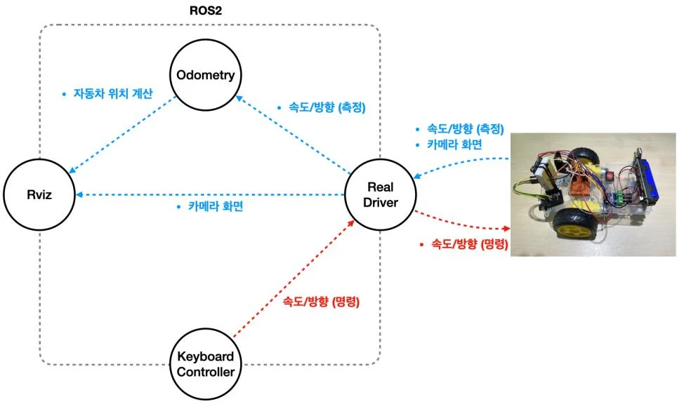
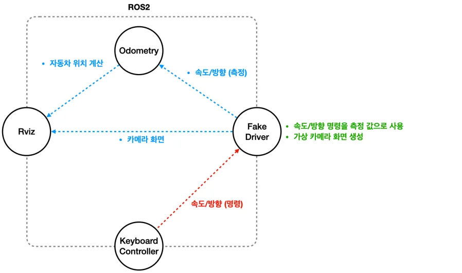
자동차 연동 시뮬레이션 참고 차 동 이동 로봇 시뮬레이션
- 차 동 구동 컨트롤러 노드 작성 import rclpy from rclpy.node import Node from geometry_msgs.msg import Twist from nav_msgs.msg import Odometry import math class DiffDriveController(Node): def init(self): super().init('diff_drive_controller') self.subscription = self.create_subscription( Twist, 'cmd_vel', self.velocity_callback, 10) self.publisher = self.create_publisher(Odometry, 'odom', 10) self.timer = self.create_timer(0.1, self.update_odometry) self.x = 0.0 self.y = 0.0 self.theta = 0.0 self.linear_velocity = 0.0 self.angular_velocity = 0.0 def velocity_callback(self, msg): self.linear_velocity = msg.linear.x self.angular_velocity = msg.angular.z def main(args=None): rclpy.init(args=args) controller = DiffDriveController() rclpy.spin(controller) controller.destroy_node() rclpy.shutdown() if name == 'main': main() def update_odometry(self): dt = 0.1 # 타이머 주기 self.x += self.linear_velocity * math.cos(self.theta) * dt self.y += self.linear_velocity * math.sin(self.theta) * dt self.theta += self.angular_velocity * dt odom = Odometry() odom.header.stamp = self.get_clock().now().to_msg() odom.header.frame_id = 'odom' odom.child_frame_id = 'base_link' odom.pose.pose.position.x = self.x odom.pose.pose.position.y = self.y odom.pose.pose.orientation.z = math.sin(self.theta / 2.0) odom.pose.pose.orientation.w = math.cos(self.theta / 2.0) self.publisher.publish(odom)
자동차 연동 시뮬레이션 참고 차 동 이동 로봇 시뮬레이션
-
Rviz2 변화의 시각화
-
RViz2 자체는 시뮬레이터가 아니라 시각화 도구이지만, 차 동 이동 로봇의 움직임을 시각화 가능 RViz2 설정
- RViz2를 실행하고 다음 디스플레이들을 추가 • RobotModel (로봇 시각화) • TF (좌표 프레임 관계) • Odometry (로봇의 이동 경로) 실행 1.런치 파일 실행: ros2 launch car_tutorial your_launch_file.py 2.차 동 구동 컨트롤러 실행: ros2 run car_tutorial diff_drive_controller 3.Teleop 실행 (선택 사항): ros2 run teleop_keyboard
자동차 연동 시뮬레이션 참고 실제 로봇 구현 시 고려 사항 -물리 시뮬레이션
- 더 정확한 시뮬레이션을 위해서는 Gazebo와 같은 물리 엔진을 사용하는 것 권장
- Gazebo는 ROS2와 통합되어 있어 RViz2와 함께 사용. •센서 시뮬레이션
- 실제 로봇에 장착된 센서들(예: 라이다, 카메라 등)을 시뮬레이션하려면 추가적인 노드나 Gazebo 플러그인이 필요. •제어 알고리즘
- 실제 로봇 제어에 사용될 알고리즘(예: PID 제어, 장애물 회피 등)을 구현하고 테스트. •네비게이션
- ROS2의 nav2 패키지를 사용하여 자율 주행 기능을 구현하고 테스트. •매핑
-
SLAM (Simultaneous Localization and Mapping) 알고리즘을 구현하여 로봇이 환경 맵을 생성하는 과정을 시뮬레이션.
-
가제보(gazebo) 시각화
자동차 연동 시뮬레이션 참고 차 동 이동 로봇 시뮬레이션
- Caster Wheel 추가하기
<joint name="caster_wheel_joint"
type="fixed">
- Collision 추가하기
자동차가 주행하다가 장애물을 만난다면 그대로 통과 문제
충동을 시뮬레이션을 위해서 collision을 추가
자동차 연동 시뮬레이션 참고 차 동 이동 로봇 시뮬레이션
- 관성 모 멘트 추가
\({mass}" /> <inertia ixx="\){(1/12) * mass * (y*y+z*z)}" ixy="0.0" ixz="0.0" iyy="\({(1/12) * mass * (x*x+z*z)}" iyz="0.0" izz="\){(1/12) * mass * (x*x+y*y)}" />
- URDF를 Gazebo에서 로딩하기 $ ros2 launch gazebo_ros gazebo.launch.py $ ros2 launch urdf_tutorial robot_3.launch.py use_sim_time:=true
SLAM 참고 ODOM,TF 발행
주제2.1 기초
참고
센서 정보 시각화– ODOM,TF 발행
-초기화 함수에서 파라미터(휠 간 거리, 인 코 더 해상도, 휠 반경)를 설정합니다.
-오도메트리 상태 변수(x, y, theta, 왼쪽/오른쪽 틱)를 초기화합니다.
-왼쪽과 오른쪽 휠 인 코 더 틱을 구독합니다.
-오도메 트리 메시지를 발행할 퍼블리셔 를 생성합니다.
-TF 브로드캐스터를 설정합니다.
-오도메트리 발행을 위한 타이머를 생성합니다.
-콜백 함수(left_callback, right_callback)에서 인 코 더 틱 정보를 저장합니다.
-각 휠의 이동 거리를 계산합니다.
-로봇의 이동 거리와 회전 각을 계산합니다.
-로봇의 위치와 방향을 업데이트합니다.
-오일러 각을 쿼터 니 언으로 변환합니다.
-Odometry 메시지를 생성하고 발행합니다.
-TF(Transform) 메시지를 생성하고 브로드캐스트합니다.
-인 코 더 틱을 리셋합니다.
pip install transforms3d
package.xml에 필요한 의존성을 추가합니다:
xmlCopy
주제2.1 기초 참고 센서 정보 시각화- 라이다 import rclpy from rclpy.node import Node from std_msgs.msg import Int32 from nav_msgs.msg import Odometry from geometry_msgs.msg import TransformStamped, Quaternion from tf2_ros import TransformBroadcaster import math from tf_transformations import quaternion_from_euler class WheelOdometryNode(Node): def init(self): super().init('wheel_odometry_node')
# Parameters
self.wheel_separation = 0.5 # Distance between wheels in meters
self.ticks_per_revolution = 1000 # Encoder ticks per wheel revolution
self.wheel_radius = 0.1 # Wheel radius in meters
# Odometry state
self.x = 0.0
self.y = 0.0
self.theta = 0.0
self.left_ticks = 0
self.right_ticks = 0
# Subscribers
self.left_sub = self.create_subscription(Int32, 'left_ticks', self.left_callback, 10)
self.right_sub = self.create_subscription(Int32, 'right_ticks', self.right_callback, 10)
# Publishers
self.odom_pub = self.create_publisher(Odometry, 'odom', 10)
# TF Broadcaster
self.tf_broadcaster = TransformBroadcaster(self)
# Timer for publishing odometry
self.create_timer(0.1, self.publish_odometry) # 10Hz
def left_callback(self, msg):
self.left_ticks = msg.data
def right_callback(self, msg):
self.right_ticks = msg.data
def publish_odometry(self): # Calculate distance traveled by each wheel left_distance = (self.left_ticks / self.ticks_per_revolution) * 2 * math.pi * self.wheel_radius right_distance = (self.right_ticks / self.ticks_per_revolution) * 2 * math.pi * self.wheel_radius
# Calculate change in position and orientation
distance = (left_distance + right_distance) / 2
delta_theta = (right_distance - left_distance) / self.wheel_separation
# Update pose
self.x += distance * math.cos(self.theta)
self.y += distance * math.sin(self.theta)
self.theta += delta_theta
# Create quaternion from yaw
q = quaternion_from_euler(0, 0, self.theta)
# Publish odometry message
odom = Odometry()
odom.header.stamp = self.get_clock().now().to_msg()
odom.header.frame_id = 'odom'
odom.child_frame_id = 'base_link'
odom.pose.pose.position.x = self.x
odom.pose.pose.position.y = self.y
odom.pose.pose.position.z = 0.0
odom.pose.pose.orientation = Quaternion(x=q[0], y=q[1], z=q[2], w=q[3])
self.odom_pub.publish(odom)
# Broadcast TF
t = TransformStamped()
t.header.stamp = self.get_clock().now().to_msg()
t.header.frame_id = 'odom'
t.child_frame_id = 'base_link'
t.transform.translation.x = self.x
t.transform.translation.y = self.y
t.transform.translation.z = 0.0
t.transform.rotation = odom.pose.pose.orientation
self.tf_broadcaster.sendTransform(t)
# Reset ticks
self.left_ticks = 0
self.right_ticks = 0
def main(args=None): rclpy.init(args=args) node = WheelOdometryNode() rclpy.spin(node) node.destroy_node() rclpy.shutdown() if name == 'main': main()
자동차 연동 시뮬레이션 참고 가상 자동차 만들기 joint_states는 URDF에서 정의한 두 개의 Joint (left_wheel_joint, right_wheel_joint) 정보 def main(args=None): rclpy.init(args=args) driver = FakeDriver() executor = MultiThreadedExecutor() rclpy.spin(driver, executor=executor) driver.destroy_node() rclpy.shutdown() if name == 'main': main() src/car_tutorial/car_tutorial/fake_driver.py import rclpy from rclpy.node import Node from rclpy.executors import MultiThreadedExecutor from sensor_msgs.msg import JointState class FakeDriver(Node): def init(self): super().init('fake_driver') # joint states publisher self.pub_joint_states = self.create_publisher(JointState, "joint_states", 10) # init variable self.joint_states = JointState() self.joint_states.header.frame_id = "joint_states" self.joint_states.name = ["left_wheel_joint", "right_wheel_joint"] self.joint_states.position = [0.0, 0.0] # timer self.timer = self.create_timer(0.1, self.publish_callback)
def publish_callback(self):
curr_time = self.get_clock().now()
# joint states
self.joint_states.header.stamp = curr_time.to_msg()
# publish
self.pub_joint_states.publish(self.joint_states)
# simulate wheel rotate
self.joint_states.position[0] += 0.05
self.joint_states.position[1] += 0.05
자동차 연동 시뮬레이션 참고 가상 자동차 만들기 src/car_tutorial/setup.py'의 console_scripts 부분에 아래 내용을 추가 'src/car_tutorial/launch/fake.launch.py' 파일 수정
자동차 연동 시뮬레이션 참고 정상 실행하기 $ cd ~/Workspace/ros_ws/ $ colcon build --symlink-install $ source install/setup.bash $ ros2 launch car_tutorial fake.launch.py 터미널에서 'src/car_tutorial/launch/fake.launch.py' 실행 자동차 연동 시뮬레이션 참고 자동차 이동 및 이미지 전송 FakeDriver에서cmd_vel subscribe and vel_raw 발행하기 -키보드(teleop_twist_keyboard)를 이용해서 로봇에게 제어 명령을 내리면 로봇이 이동하는 기능에 대한 과정 -실제 로봇은 Driver가 명령을 받으면 자동차에게 그 명령을 따라 동작하도록 명령을 전달하고 로봇으로부터 실제 이동 속도 등의 정보를 받아야함 가상 로봇이기 때문에 입력 받은 명령 그대로 로봇이 이동한다고 가정하겠습니다. 따라서 키보드 입력 값 그 대로를 로봇의 실제 이동 정보로 사용 ◦ 키보드를 이용한 자동차 제어 명령인 'cmd_vel' Topic을 수신할 subscriber를 등록 ◦ 현재 로봇의 속도를 'vel_raw' Topic으로 전송할 publisher를 등록 ◦ 0.1초에 한 번씩 'vel_raw' Topic을 발송
주제2.1 자동차 연동 시뮬레이션 참고 가상 자동차 만들기 -첫 번째 터미널에서 아래 명령을 실행해서 'src/car_tutorial/launch/fake.launch.py'를 실행합니다. -두 번째 터미널에서 아래 명령을 실행합니다. $ cd ~/Workspace/ros_ws/ $ colcon build --symlink-install $ source install/setup.bash $ ros2 launch car_tutorial fake.launch.py $ ros2 run teleop_twist_keyboard teleop_twist_keyboard
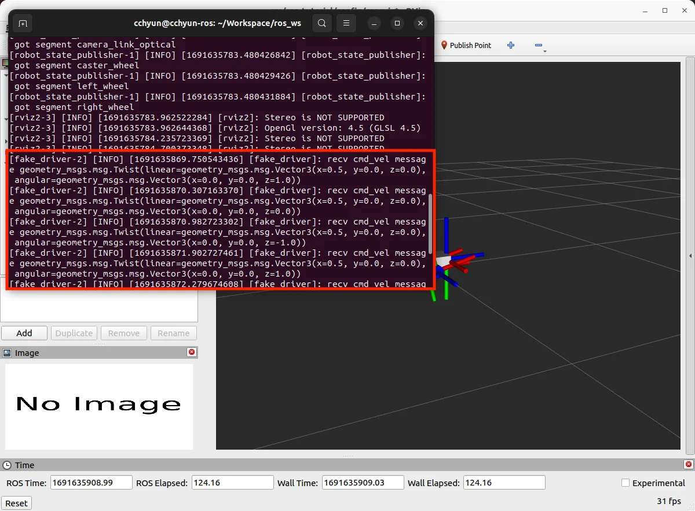
주제2.1 자동차 연동 시뮬레이션 참고 가상 자동차 만들기 -세 번째 터미널에서 아래 명령을 실행합니다. $ rqt_graph FakeDriver - img_raw publish 적당한 크기의 (400 x 300) 이미지를 'src/car_tutorial/car_tutorial/photo.png'에 저장
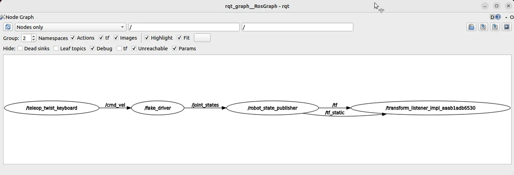
주제2.1 자동차 연동 시뮬레이션 참고 가상 자동차 만들기 'src/car_tutorial/car_tutorial/fake_driver.py' 파일을 아래와 같이 편집
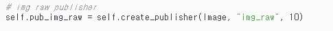
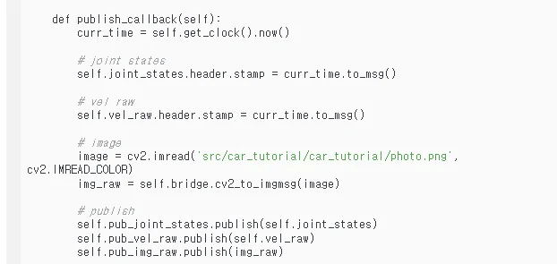
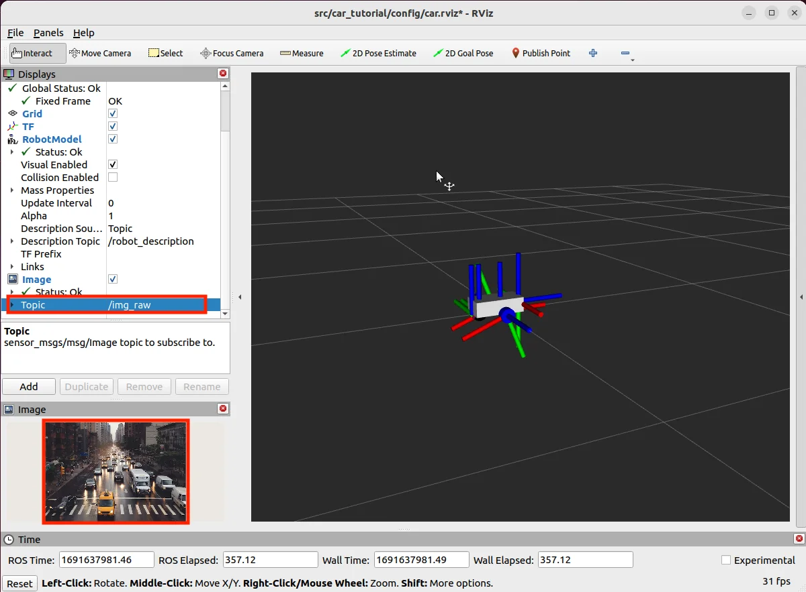
SLAM 참고 슬램(SLAM)
RQT 참고 SLAM과 RViz2
- 로봇의 자율 주행을 위해 SLAM을 사용하는 경우, RViz2에서 SLAM이 생성하는 실시간 지도를 확인
-
ROS2에서는 주로 nav2 패키지와 함께 사용되며, RViz2에서 로봇의 위치와 생성된 지도를 동시에 시각화 1.Map Displays 항목을 추가. 2.SLAM 알고리즘이 퍼블리시하는 map 토픽을 설정. 3.로봇이 탐색한 영역이 지도 형태로 나타남. SLAM (Simultaneous Localization and Mapping)
-
SLAM 지도 시각화
RQT 참고 터틀봇3를 이용한 SLAM
-
위치: 로봇의 위치 계측/추정하는 기능
-
GPS : 오차, 날씨, 실외 등의 문제점
- 해결책(절대 위치): IPS(indoor positioning sensor): landmark, indoor gps, wifi slam, beacon
- 추측 항법(상대 위치): 양 바퀴 축의 회전 값 이용/ 이동 거리와 회전 값 이용해 위치 측정
-
IMU(관성 센서, 필터))로 위치 보상 -> 필요 정보: 양 바퀴 축의 엔 코 더 값, 바퀴 간 거리, 바퀴 반지름 이용하여 식에 대입
-
센싱: 벽, 물체 등의 장애물의 계측하는 기능
-
거리 센서, 비전 센서, Depth camera
-
지도: 길과 장애물 정보가 담긴 지도
-
지도가 없으면 만들면 된다 => 이게 SLAM (로봇의 위치와 지도를 만드는 과정)
-
경로: 목적지까지 최적 경로를 계산하고 주행하는 기능
-
A* 알고리즘, 포텐셜 장, 파티 클 필터, 그래프 등
-
SLAM을위한 ROS2 메시지
RQT 참고 터틀봇3를 이용한 SLAM
-
SLAM을 위한 노드들 처리 과정 RQT 참고 터틀봇3를 이용한 SLAM
-
루프 폐쇄 검출 (Loop Closure Detection) -정의: 현재 센서 위치가 이전에 방문한 곳인지 판단하는 알고리즘 -방법: 현재 센서 입력과 이전 센서 입력 사이의 유사성을 고려 -효과: 아래와 같이 Visual Odometry에 의해 표류 오차가 누적된 빨간 선에서 루프 폐쇄 검출 알고리즘을 통해 같은 위 치임을 판단해 전체 궤적을 초록 선에 가까이 보정할 수 있음
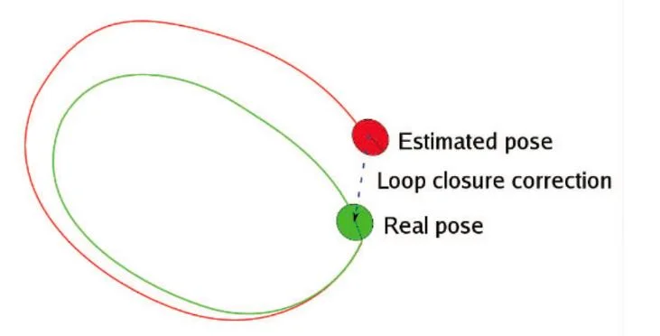
RQT 참고 터틀봇3를 이용한 SLAM
-
DWA(dynamic window approach) 로봇 내비게이션에서 사용되는 중요한 지역 경로 계획 알고리즘 충돌 가능한 장애물을 회피하며 목표 점까지 빠르게 갈 수 있는 속도를 선택하는 방법. 즉, 지도를 위치 영역 기반이 아닌 속도 영역으로 바꿈 평가 기준
-
각 속도 조합은 다음 세 가지 주요 기준으로 평가 1.목표도 달성 (목표 지점에 가까워지는 정도) 2.장애물 회피 (장애물로부터 안전한 거리 유지) 3.속도 프로파일 (로봇의 운동학적 제약 고려)
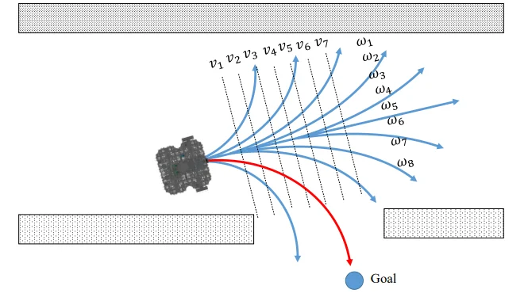
자동차 연동 시뮬레이션 참고 차 동 이동 로봇 시뮬레이션
- SDF 플러그인(plugin) SDF Plugin은 SDF 모델에 특정 동작을 추가하기 위해 사용하는 코드 Gazebo에서 로봇이나 환경이 더 동적이고 상호 작용적으로 동작하도록 추가되는 소프트웨어 컴포넌트, 주로 C++로 작성 -로봇의 특정 행동 정의 -센서 데이터 생성 및 처리 -시뮬레이션 환경과의 상호 작용 ROS 2에서 SDF Plugin의 역할 -ROS 2 노드와 통신 -토픽이나 서비스를 통해 데이터 송수신 -Gazebo 시뮬레이터 내의 로봇 동작 제어
자동차 연동 시뮬레이션 참고 차 동 이동 로봇 시뮬레이션 SDF Plugin 작성하기 플러그인은 gazebo::ModelPlugin 또는 gazebo::SensorPlugin 클래스를 상속받아 구현
include ¶
include ¶
include ¶
namespace gazebo { class ExamplePlugin : public ModelPlugin { public: void Load(physics::ModelPtr _model, sdf::ElementPtr _sdf) override { rclcpp::init(0, nullptr); auto node = rclcpp::Node::make_shared("example_plugin");
auto publisher = node->create_publisher<std_msgs::msg::String>("example_topic", 10);
auto msg = std_msgs::msg::String();
msg.data = "Hello from SDF Plugin!";
publisher->publish(msg);
}
};
GZ_REGISTER_MODEL_PLUGIN(ExamplePlugin)
} CMake 설정
자동차 연동 시뮬레이션
참고
차 동 이동 로봇 시뮬레이션
자동차 연동 시뮬레이션 참고 차 동 이동 로봇 시뮬레이션 ROS 2와 Gazebo SDF 파일을 활용해 카메라, 두 개의 차 동 로봇 구동 부(two-differential-mover), 그리고 IMU 센서를 포함한 예제
주요 태그
-
자동차 연동 시뮬레이션 참고 차 동 이동 로봇 시뮬레이션 ROS 2와 Gazebo SDF 파일을 활용해 카메라, 두 개의 차 동 로봇 구동 부(two-differential-mover), 그리고 IMU 센서를 포함한 예제
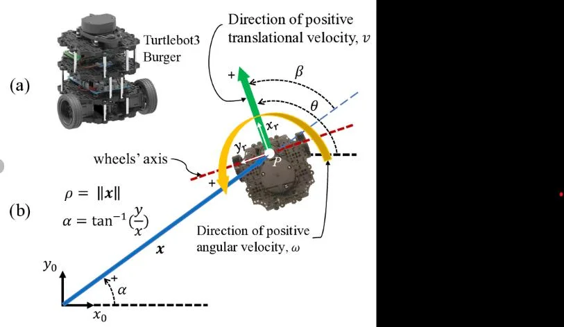
자동차 연동 시뮬레이션 참고 차 동 이동 로봇 시뮬레이션 ROS 2와 Gazebo SDF 파일을 활용해 카메라, 두 개의 차 동 로봇 구동 부(two-differential-mover), 그리고 IMU 센서를 포함한 예제
<sensor name="imu_sensor" type="imu">
<pose>0 0 0.2 0 0 0</pose>
<imu>
<angular_velocity>
<x>0</x>
<y>0</y>
<z>0</z>
</angular_velocity>
<linear_acceleration>
<x>0</x>
<y>0</y>
<z>0</z>
</linear_acceleration>
</imu>
<plugin name="imu_plugin" filename="libgazebo_ros_imu.so">
<ros>
<namespace>/imu</namespace>
<topic_name>data</topic_name>
<frame_name>imu_link</frame_name>
</ros>
</plugin>
</sensor>
<sensor name="camera_sensor" type="camera">
<pose>0 0 0.5 0 0 0</pose>
<camera>
<horizontal_fov>1.047</horizontal_fov>
<image>
<width>640</width>
<height>480</height>
<format>R8G8B8</format>
</image>
</camera>
<plugin name="camera_plugin" filename="libgazebo_ros_camera.so">
<ros>
<namespace>/camera</namespace>
<topic_name>image_raw</topic_name>
<frame_name>camera_link</frame_name>
</ros>
</plugin>
</sensor>
SLAM 참고 주행(Navigation)
자동차 연동 시뮬레이션 참고 주행(Navigation)
- TurtleBot3에서 Nav2(Navigation 2)를 사용할 때 생성되는 주요 노드 -map_server -사전에 작성된 지도(map) 파일을 로드하고 공유합니다. -로봇에게 환경 정보를 제공합니다. -정적 지도 정보를 /map 토픽으로 발행합니다. -amcl (Adaptive Monte Carlo Localization) -파티 클 필터 기반 로컬 라 이제 이 션 노드 -로봇의 현재 위치를 추정합니다. -센서 데이터와 지도를 기반으로 로봇의 위치를 지속적으로 업데이트합니다. -/amcl_pose, /particlecloud 토픽을 발행합니다. -behavior_server -네비게이션 중 로봇의 행동을 관리합니다. -회전, 대기, 정지 등 다양한 로봇 행동을 제어합니다.
자동차 연동 시뮬레이션 참고 주행(Navigation) -bt_navigator -행동 트리(Behavior Tree) 기반 경로 탐색 노드 -목표 지점까지의 전역 경로를 생성합니다. -복잡한 네비게이션 로직을 구현할 수 있습니다. -controller_server -로봇의 속도와 방향을 실시간으로 조절합니다. -장애물 회피 및 경로 추종 기능을 담당합니다. -로컬 경로 계획을 수행합니다. -planner_server -전역 경로 계획을 담당합니다. -출발지에서 목적지까지의 최적 경로를 계산합니다. -A* 또는 Dijkstra 알고리즘 등을 사용합니다.
- TurtleBot3에서 Nav2(Navigation 2)를 사용할 때 생성되는 주요 노드
자동차 연동 시뮬레이션 참고 주행(Navigation) -lifecycle_manager -Nav2 노드들의 생명 주기를 관리합니다. -노드들의 설정, 활성화, 비활성화를 제어합니다. -rviz -시각화 도구로, 로봇의 위치, 경로, 센서 데이터 등을 시각적으로 표현합니다.
- TurtleBot3에서 Nav2(Navigation 2)를 사용할 때 생성되는 주요 노드
자동차 연동 시뮬레이션 참고 주행(Navigation) 주요 통신 토픽 -/cmd_vel: 로봇 속도 제어 토픽 -/odom: Odometry 정보 -/scan: LiDAR 센서 데이터 -/map: 지도 정보 -/initialpose: 초기 위치 설정 -/move_base_simple/goal: 목표 지점 설정 구동 과정
Nav2 런치 파일 실행¶
ros2 launch nav2_bringup navigation_launch.py
초기 위치 설정¶
ros2 topic pub /initialpose geometry_msgs/msg/PoseWithCovarianceStamped "{...}"
목표 지점 설정¶
ros2 topic pub /move_base_simple/goal geometry_msgs/msg/PoseStamped "{...}"
자동차 연동 시뮬레이션 참고 주행(Navigation) 시뮬레이션 런치 파일 실행
시뮬레이션 환경 로드¶
roslaunch turtlebot3_gazebo turtlebot3_world.launch
별도의 터미널에서 네비게이션 런치¶
roslaunch turtlebot3_navigation turtlebot3_navigation.launch -기본적으로 global planner와 local planner 사용 -Global: A* 알고리즘 -Local: Dynamic Window Approach(DWA) 경로 알고리즘 -/move_base 노드의 파라미터 수정 가능 -costmap 설정 -로봇 footprint -최대/최소 속도 -가속도 제한 파라미터 조정 -AMCL(Adaptive Monte Carlo Localization) 사용 -파티 클 필터로 위치 추정 정확도 개선 오차 보정
SLAM 참고 다중 로봇 환경
자동차 연동 시뮬레이션 참고 TurtleBot3 차 동 이동 로봇 시뮬레이션 namespace 변경, 다중 로봇 환경에서 각 로봇을 구분하거나 특정 네임 스페이스에서 노드 실행해야할 때 필요 네임 스페이스를 변경하면 각 로봇이나 관련된 토픽들이 충돌하지 않도록 독립적인 네임 스페이스에서 실행
-
네임 스페이스 변경의 주요 방법 TurtleBot3에서 네임 스페이스를 변경하는 방법은 두 가지입니다. A. ROS 2 Launch 파일에서 네임 스페이스 설정 ROS 2의 launch 파일에서 네임 스페이스를 설정합니다. B. 네임 스페이스를 사용하여 터미널에서 실행 명령어 실행 시 --ros-args를 이용해 네임 스페이스를 적용합니다.
-
Launch 파일에서 네임 스페이스 설정 TurtleBot3의 launch 파일에서 namespace를 추가로 정의하고 적용합니다. 예제: TurtleBot3의 robot_state_publisher에 네임 스페이스 적용 기존 turtlebot3_robot.launch.py를 수정하거나 별도의 커스 텀 launch 파일을 만듭니다. ros2 run turtlebot3_node turtlebot3_ros --ros-args --namespace robot1
자동차 연동 시뮬레이션 참고 차 동 이동 로봇 시뮬레이션 from launch import LaunchDescription from launch_ros.actions import Node def generate_launch_description(): namespace = 'robot1' # 변경할 네임 스페이스 설정 return LaunchDescription([ Node( package='robot_state_publisher', executable='robot_state_publisher', name='robot_state_publisher', namespace=namespace, # 네임 스페이스 적용 output='screen', parameters=[{'use_sim_time': True}] ), Node( package='turtlebot3_node', executable='turtlebot3_ros', name='turtlebot3_ros', namespace=namespace, # 네임 스페이스 적용 output='screen', parameters=[{'use_sim_time': True}] ) ]) ros2 launch my_turtlebot3_launch.py
자동차 연동 시뮬레이션 참고 차 동 이동 로봇 시뮬레이션 from launch import LaunchDescription from launch_ros.actions import Node def generate_launch_description(): robot1_ns = 'robot1' robot2_ns = 'robot2' return LaunchDescription([ # Robot 1 Node( package='turtlebot3_node', executable='turtlebot3_ros', name='turtlebot3_ros', namespace=robot1_ns, output='screen', parameters=[{'use_sim_time': True}] ), # Robot 2 Node( package='turtlebot3_node', executable='turtlebot3_ros', name='turtlebot3_ros', namespace=robot2_ns, output='screen', parameters=[{'use_sim_time': True}] ) ]) ros2 launch multi_robot_turtlebot3.launch.py -/robot1/cmd_vel -/robot1/odom -/robot1/scan -/robot2/cmd_vel -/robot2/odom -/robot2/scan Topic list
자동차 연동 시뮬레이션
참고
차 동 이동 로봇 시뮬레이션
다중 로봇 환경에서 TF 충돌을 방지하려면, 각 로봇의 TF 프레임 이름에도 네임 스페이스를 추가
TurtleBot3의 URDF 또는 XACRO 파일에서 robot_description에 네임 스페이스를 포함
Node(
package='robot_state_publisher',
executable='robot_state_publisher',
namespace='robot1',
parameters=[{'robot_description': '
자동차 연동 시뮬레이션 참고 차 동 이동 로봇 시뮬레이션
-
네임 스페이스와 토픽의 기본 동작 네임 스페이스가 적용되면 노드가 생성하는 모든 토픽, 서비스, 액션은 해당 네임 스페이스 아래에서 생성 /robot1/cmd_vel
-
네임 스페이스를 무시하고 글로벌 토픽을 사용하는 방법 글로벌 토픽을 사용하려면 토픽 이름 앞에 슬래시(/)를 붙여 절대 경로로 명시 import rclpy from geometry_msgs.msg import Twist def main(): rclpy.init() node = rclpy.create_node('namespace_example', namespace='robot1') # 네임 스페이스 설정 pub = node.create_publisher(Twist, '/cmd_vel', 10) # 글로벌 토픽 설정 msg = Twist() msg.linear.x = 1.0 pub.publish(msg) rclpy.spin(node) if name == 'main': main()
자동차 연동 시뮬레이션 참고 차 동 이동 로봇 시뮬레이션
- 네임 스페이스와 연결된 토픽을 사용하는 방법 네임 스페이스에 종속된 토픽은 네임 스페이스를 포함한 경로로 접근해야합니다. 이를 위해 상대 경로와 절대 경로를 구분 상대 경로 토픽 토픽 이름이 상대 경로라면 노드의 네임 스페이스가 자동으로 추가됩니다. -예: cmd_vel → /robot1/cmd_vel (노드의 네임 스페이스: robot1) 절대 경로 토픽 절대 경로를 사용하면 네임 스페이스와 상관없이 해당 경로로 접근합니다. -예: /robot1/cmd_vel 또는 /cmd_vel 네임 스페이스 변경 런치 파일에서 네임 스페이스를 설정하면, 모든 노드와 토픽이 해당 네임 스페이스를 사용 from launch import LaunchDescription from launch_ros.actions import Node def generate_launch_description(): return LaunchDescription([ Node( package='turtlebot3_node', executable='turtlebot3_ros', name='turtlebot3_node', namespace='robot1', # 네임 스페이스 설정 output='screen' ) ])
자동차 연동 시뮬레이션 참고 차 동 이동 로봇 시뮬레이션 노드가 사용하는 기본 이름(토픽, 서비스, 액션, 노드 이름 등)을 런 타임에 다른 이름으로 변경하는 기능. 이 기능은 네임 스페이스를 구성하거나 여러 노드가 동일한 토픽을 충돌 없이 사용할 수 있도록할 때 유용 ROS 2의 Remapping (리매핑)
-
Remapping의 사용 대상 -Topic (예: /cmd_vel → /robot1/cmd_vel) -Service (예: /reset → /robot1/reset) -Action (예: /navigate → /robot1/navigate) -Node 이름 (예: my_node → robot1_my_node)
-
Remapping의 주요 방법 A. CLI 명령어에서 Remapping ros2 run my_package my_node --ros-args --remap __node:=robot1_node --remap /cmd_vel:=/robot1/cmd_vel
자동차 연동 시뮬레이션 참고 차 동 이동 로봇 시뮬레이션 ROS 2의 Remapping (리매핑) B. Launch 파일에서 Remapping from launch import LaunchDescription from launch_ros.actions import Node def generate_launch_description(): return LaunchDescription([ Node( package='my_package', executable='my_node', name='robot1_node', # 노드 이름 변경 remappings=[ ('/cmd_vel', '/robot1/cmd_vel'), # 토픽 리매핑 ('/odom', '/robot1/odom') # 다른 토픽 리매핑 ] ) ])
자동차 연동 시뮬레이션 참고 차 동 이동 로봇 시뮬레이션 ROS 2의 Remapping (리매핑) C. 코드에서 Remapping import rclpy from rclpy.node import Node class MyNode(Node): def init(self): super().init('my_node') self.subscriber = self.create_subscription( String, '/cmd_vel', # 이 이름은 리 매핑 대상 self.callback, ) def callback(self, msg): self.get_logger().info(f"Received: {msg.data}") def main(): rclpy.init() node = MyNode() rclpy.spin(node) if name == 'main': main() ros2 run my_package my_node --ros-args --remap /cmd_vel:=/robot1/cmd_vel
자동차 연동 시뮬레이션 참고 차 동 이동 로봇 시뮬레이션 ROS 2의 Remapping (리매핑) A. 노드 이름 리매핑 리 매핑 키워드 __node를 사용하여 노드 이름을 변경합니다. ros2 run my_package my_node --ros-args --remap __node:=robot1_node B. 네임 스페이스 변경 ros2 run my_package my_node --ros-args --remap __ns:=/robot1 C. 토픽 이름 리매핑 ros2 run my_package my_node --ros-args --remap /cmd_vel:=/robot1/cmd_vel
SLAM 참고 MOVEIT2
Moveit2 참고 MoveIt 2 설치 및 사용 방법 MoveIt2는 ROS 2 패키지로 제공되며, apt 패키지 매니저를 통해 쉽게 설치할 수 있습니다. sudo apt update sudo apt install ros-humble-moveit MoveIt2 Setup Assistant 사용 로봇의 URDF 또는 XACRO 파일을 MoveIt2 환경에서 쉽게 사용할 수 있도록 설정하는 도구인 MoveIt Setup Assistant를 사용하여 설정합니다. ros2 launch moveit_setup_assistant setup_assistant.launch.py
Moveit2 참고 MoveIt Setup Assistant -로봇의 URDF/XACRO 파일 로드 -MoveIt Setup Assistant를 통해 로봇의 URDF 또는 XACRO 파일을 로드합니다. -URDF/XACRO 파일은 로봇의 기구 학적 모델(링크와 조인트)을 정의하며, -RViz2에서 로봇 모델을 시각적으로 확인할 수 있습니다. -Planning Groups 설정 -로봇의 조인트와 링크들을 그룹으로 묶어서 모션 플래닝을 위한 그룹을 설정합니다. -예를 들어, 로봇 팔의 여러 조인트를 하나의 그룹으로 묶을 수 있습니다. -End Effectors 설정 -로봇의 말단 장치(예: 그리퍼 또는 툴)를 설정합니다. -Virtual Joints 설정 -로봇 베이스의 가상 관절을 설정하여 이동 가능한 로봇의 경우를 고려합니다 -(예: 로봇이 이동할 때 베이스의 가상 조인트를 추가). -Self-Collision 검사 설정 -로봇의 링크들이 서로 충돌하지 않도록 Self-Collision Matrix를 생성합니다. -IK 솔버 설정 -역운동 학 솔버를 설정합니다. -주로 KDL(Kinematics and Dynamics Library)이나 IKFast와 같은 솔버를 선택할 수 있습니다. -Configuration Files 저장 -설정이 완료되면 config 폴더에 로봇의 MoveIt 설정 파일을 저장합니다. -이는 launch 파일, srdf 파일 등으로 구성됩니다.
Moveit2
참고
RViz2에서 MoveIt 2 실행 및 시각화
MoveIt 2 실행
-생성된 moveit_config 패키지 내에서 로봇을 플래닝하기 위해 launch 파일을 실행합니다.
ros2 launch
Moveit2 참고 MOVEIT Moveit은 로봇 공학에서 사용할 수 있는 매우 강력한 모션 플래닝 프레임워크. 생성된 패키지에 어떤 추가 수정이 필요한지, 시각화 도구 Rviz에서 Moveit 플러그인을 사용 사용 방법 순서 -MoveIt Setup Assistant 사용 URDF/SRDF 파일 기반으로 MoveIt 설정 파일을 생성. -플래닝 그룹(로봇 팔, 그리퍼 등)을 정의, 플래닝 알고리즘을 선택. -Rviz에서 로봇의 모델을 시각화, 목표 위치를 설정한 후 경로 계획을 확인. -충돌 감지 및 키네마틱 솔버 를 활용하여 최적 경로를 확인하고 수정. -계획된 경로를 로봇 컨트롤러로 전송하여 실제 로봇 동작 수행. -센서를 통해 환경 정보를 업데이트하여 실시간 경로 계획을 반영.
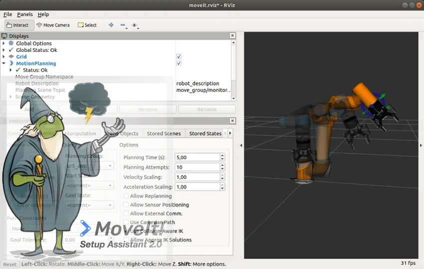
Moveit2
참고
모션 플래닝
Moveit, 모션 플래닝 프레임워크
로봇이 시작점에서 특정 원하는 위치로 정확히 어떻게 이동하는지와 관련
도중에 장애물을 피하고 제약 조건을 처리하는 것이 포함
그 외에도 잡기와 지각과 같은 조작의 다른 측면에 대한 지원을 제공
먼저 로봇과 그리퍼를 포함한 URDF를 하나 가져와야합니다.
~/catkin_ws/src$ git clone -b
Moveit2
참고
MOVEIT2
방금 다운로드한 ur5_robotiq85_gripper.urdf.xacro 파일의 4번째 줄을 수정하여 ur_description 패키지 내부
의 URDF 파일을 검색하도록합니다.
Moveit2 참고 moveit setup assistant Moveit 설정 어시스턴트를 사용하여 Moveit 구성 패키지. $ ros2 launch moveit_setup_assistant setup_assistant.launch
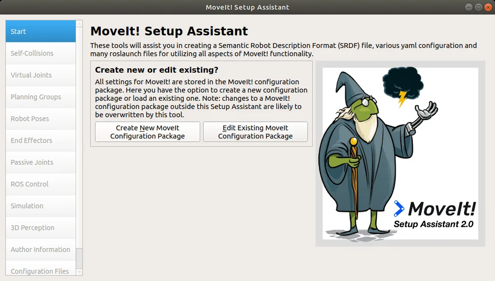
Moveit2 참고 moveit setup assistant Create New Moveit Configuration Package를 선택하면 파일 시스템에서 URDF를 선택. universal_robot 저장소에서 /universal_robot/ur_description/urdf/ur5_robotiq85_gripper.urdf.xacro를 선택하고 Load Files를 클릭 . 완료되면 다음과 같은 성공 메시지가 표시
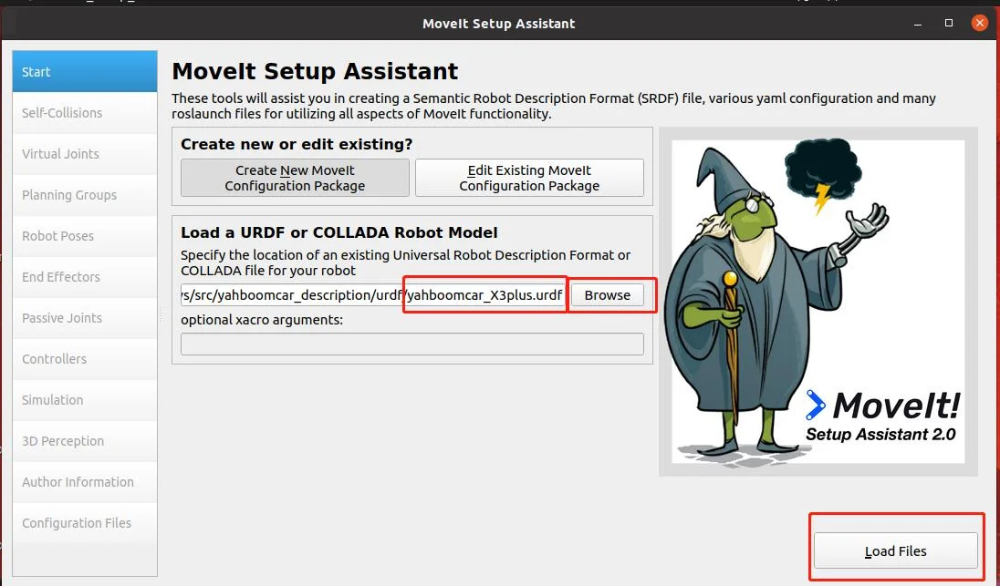
Moveit2 참고 moveit setup assistant Self-Collisions를 선택합니다 . 설정을 그대로 두고 Generate Collision Matrix를 클릭 Moveit이 모션 플래닝을 할 때, 이동 중에 로봇 부품(링크) 간에 충돌이 발생하는 지 확인 Moveit은 물리적으로 서로 충돌할 수 없는 링크를 찾아 계산에서 제외하려함.
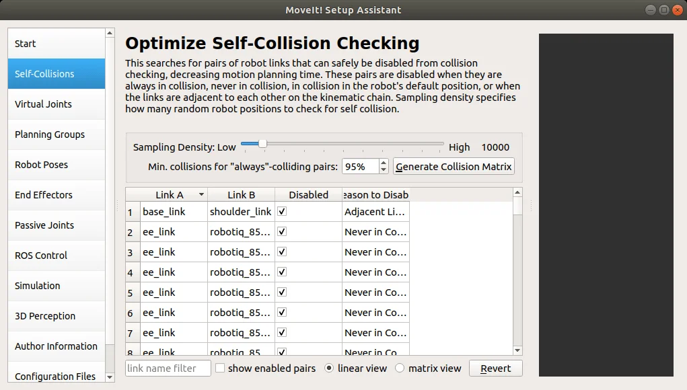
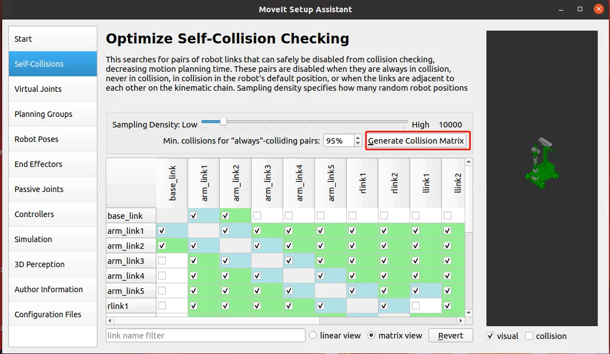
Moveit2 참고 moveit setup assistant 가상 조인트 로봇을 환경에 고정하기 위해 가상의 고정 조인트를 정의 가상 조인트 추가를 클릭하고 그림과 같이 빈칸을 채웁니다.
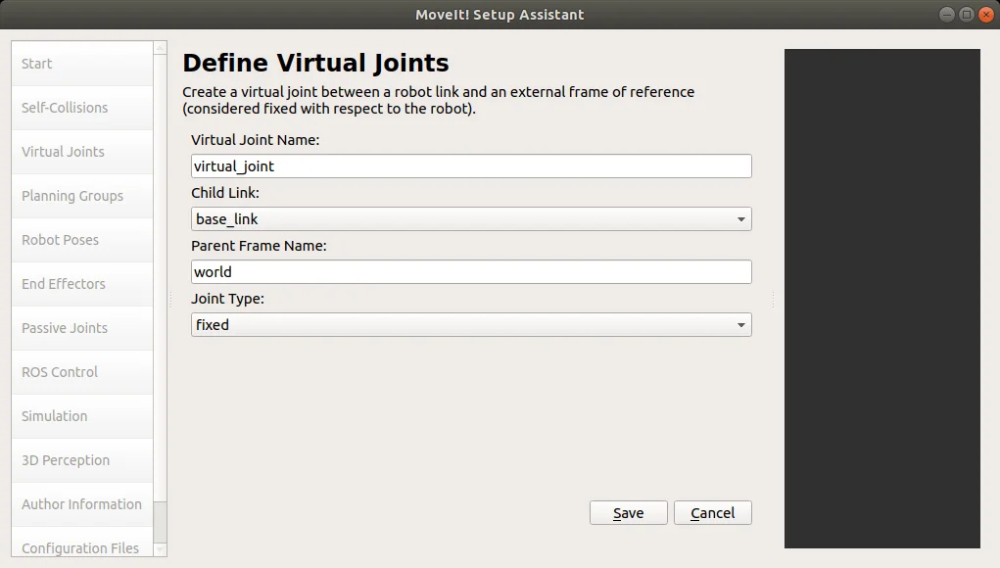
Moveit2 참고 moveit setup assistant 모션 계획 그룹 생성 Planning Group은 MoveIt의 핵심 부분, [그룹 추가]를 클릭하여 플래닝 그룹 추가. 그룹 이름: 그룹 이름을 생성하고 [arm_group]으로 설정. 운동학 솔버: 여기서 우리는 [kdl]을 선택. MoveIt은 다양한 샘플링 기반 및 최적화 기반 플래닝 알고리즘 지원 주로 OMPL (Open Motion Planning Library)를 통해 제공 RRT (Rapidly-exploring Random Tree) 샘플링 기반 플래닝 알고리즘 중 하나로, 높은 차원의 공간에서 빠르게 경 로를 찾기 위해 사용 PRM (Probabilistic Roadmap Method) 두 단계로 나뉘어 실행되는 샘플링 기반 플래닝 알고리즘입니다. 로봇이 움직일 수 있는 공간에서 미리 샘플링한 지점들로 로드맵(그래프) 을 구성한 후, 그 로드맵을 사용 STOMP: 무작위 샘플링을 사용해 장애물 회피 경로 생성.
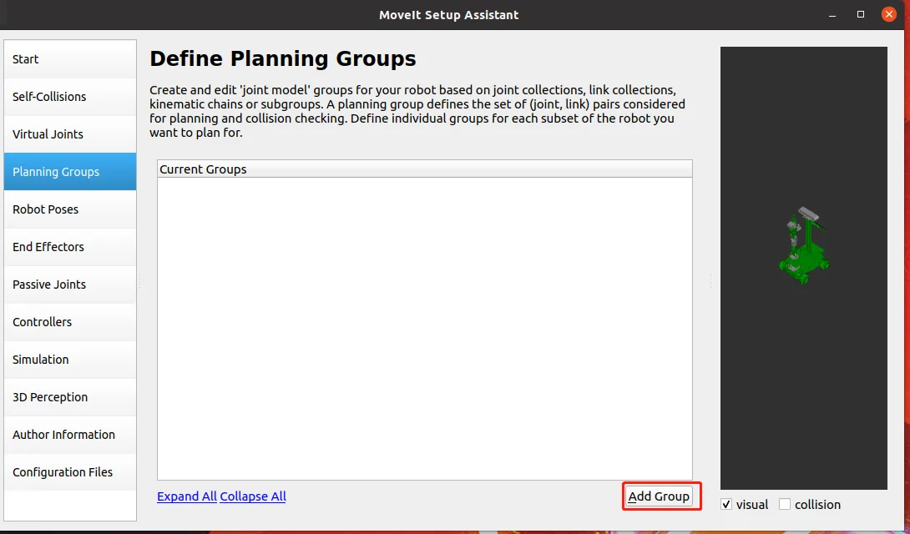
Moveit2 참고 moveit setup assistant -KDL, The Kinematics and Dynamics Library를 선택 -6개 이상의 자유도를 가진 단일 체인 기계 구조의 정방향 및 역방향 운동학 문제를 잘 풀 수 있는 운동학 및 동역학 라이브러리 -물론 SRV나 IK_FAST와 같은 다른 IK 솔버를 사용할 수도 있고, 새로운 솔버를 직접 개발하여 삽입할 수 있음 -Kin. Search Resolution: 조인트 공간의 샘플링 밀도 -Kin. Search TImeout : 해결 시간. 장비 성능이 미흡하거나 실제 적용 과정에서 지정 된 시간 내에 해결이 되지 않을 경우 시간을 늘릴 수 있다. 예를 들어 [0.1], [0.01]로 설정 -그룹 기본 플래너: RRT 또는 없음을 선택 운동학 풀이 도구, 이것은 정 방향 운동학(Forward Kinematics)과 역방향 운동학(IK)을 푸는 것 [조인트 추가]를 클릭하여 조인트를 추가
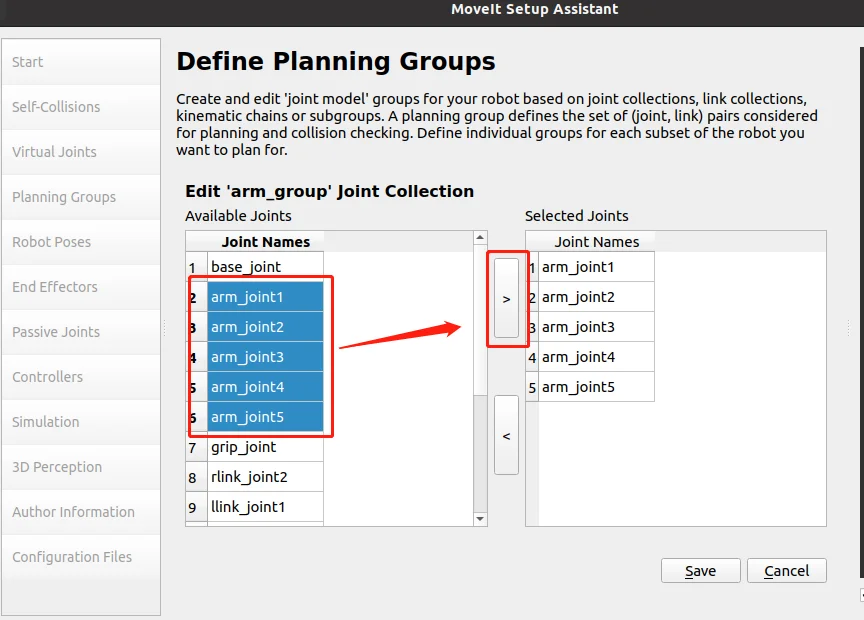
Moveit2 참고 moveit setup assistant 모션 플렌이 필요한 조인트 선택
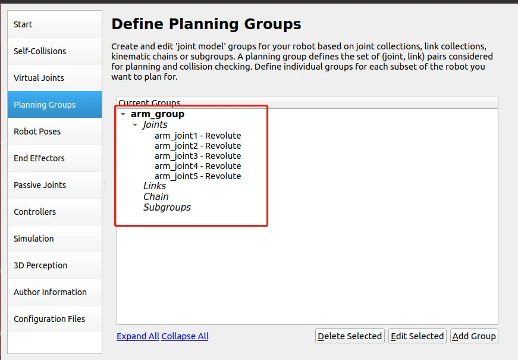
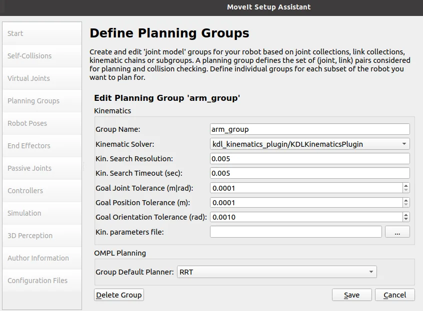
Moveit2 참고 moveit setup assistant 그리퍼 계획 그룹 추가 Add Group을 클릭하여 그리퍼를 정의. 그룹 이름으로 gripper를 입력하고, Kinematic Solver의 경우 None을 그대로 두고 Add Joints를 클릭. robotiq_85_left_knuckle_joint를 선택하고 오른쪽을 가리키는 화살표를 클릭하여 조인트가 오른쪽 열 추가
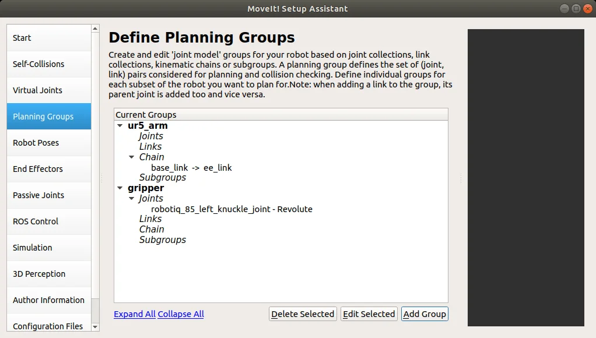
Moveit2 참고 moveit setup assistant 로봇 포즈 필수는 아니지만 기본 포즈를 정의하면 나중에 시간을 절약할 수 있음. 조인트 값을 설정하여 "홈" 포즈를 만듭니다. 아래 그림은 ur5에 유용한 홈 포즈를 보 추가 -elbow_joint: 1.5447 -shoulder_lift_joint: -1.5447 -shoulder_pan_joint: 0.0 -wrist_1_joint: -1.5794 -wrist_2_joint: -1.5794 -wrist_3_joint: 0.0
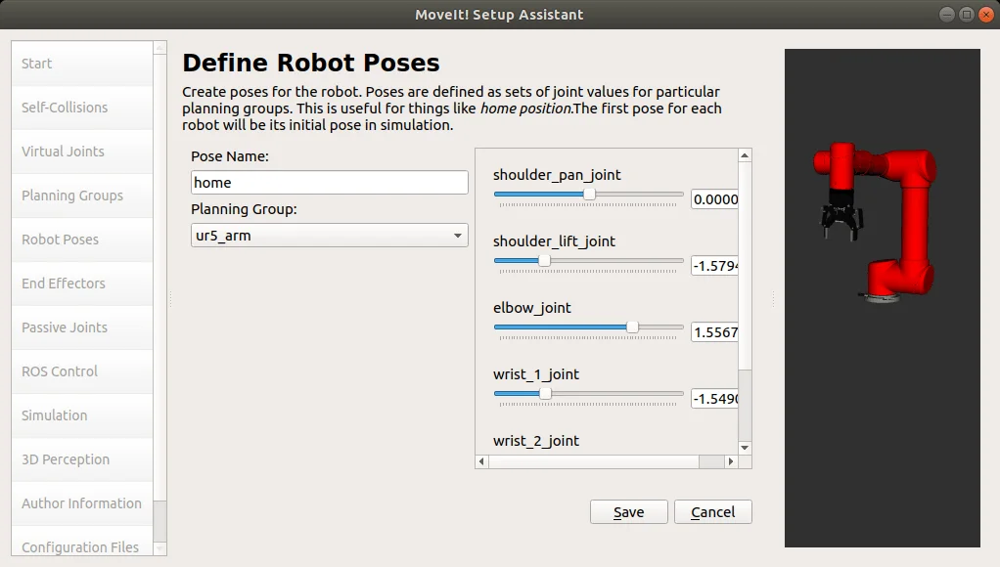
Moveit2 참고 moveit setup assistant 로봇 포즈 그리퍼를 정의하려면 End Effectors 탭으로 전환하고 Add End Effector를 클릭 이름을 robotiq_gripper로 지정하고 아래 그림과 같이 Group, Parent Link, Parent Group을 선택
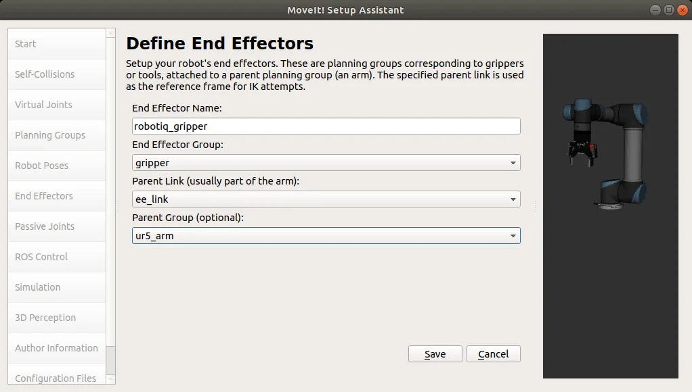
Moveit2 참고 moveit setup assistant 수동 조인트
Moveit2 참고 moveit setup assistant ROS Control Ros_control은 조인트에 대한 컨트롤러를 쉽게 설정할 수 있는 패키지 설정 어시스턴트에서 각 계획 그룹에 대해 FollowJointsTrajctory 컨트롤러 자동 추가 클릭
Moveit2 참고 moveit setup assistant 시뮬레이션 Moveit은 Gazebo 시뮬레이션에서 로봇을 실행하는 데 사용할 수 있는 URDF를 생성
주제2.1 기초 참고 moveit setup assistant 3D Preception Pane은 3D 센서 데이터를 사용하고자하는 경우 매개 변수를 설정하기 위한 것 Configuration Files 저장
MoveItのコンセプト 「MoveIt」のコンセプトの概要をまとめました。
- MoveItのシステムアーキテクチャ 下図は、「MoveIt」のシステムアーキテクチャです。「move_group」と呼ばれるノードがアーキテクチャの 中心となります。このノードは、ユーザーが使用できるROSのアクションとサービスを提供します。 move_groupは、次の3つのインタフェースで利用できます。 https://docs.ros.org/en/noetic/api/moveit_commander/ht ml/classmoveit__commander_1_1move__group_1_1Move GroupCommander.html
MoveItのコンセプト 「MoveIt」のコンセプトの概要をまとめました。
MoveItのコンセプト 「MoveIt」のコンセプトの概要をまとめました。
Moveit2 프로그램 활용 turtlebot3_manipulation.srdf.xacro 파일은 Turtlebot3 Manipulation의 시 맨 틱 로봇 설명(Semantic Robot Description)을 정의하는 파일입니다. xacro 포맷을 사용하여 SRDF를 생성합니다.
<group name="arm">
<chain base_link="link1" tip_link="end_effector_link" />
</group>
<group name="gripper">
<link name="gripper_link"/>
<link name="gripper_link_sub"/>
</group>
<group_state name="home" group="arm">
<joint name="joint1" value="0"/>
<joint name="joint2" value="-1.57"/>
<joint name="joint3" value="1.57"/>
<joint name="joint4" value="0"/>
</group_state>
<end_effector name="gripper" parent_link="end_effector_link"
group="gripper"/>
<disable_collisions link1="base_link" link2="link1" reason="Adjacent"/>
<disable_collisions link1="link1" link2="link2" reason="Adjacent"/>
Python에서 사용 예¶
move_group.set_named_target("home") # home 포즈로 이동 명령
Moveit2 프로그램 활용
- SRDF 파일 수정
(src/turtlebot3_manipulation/turtlebot3_manipulation_moveit_config/config/turtlebot3_manipulation.sfdf)
Moveit2 프로그램 활용
move_group.launch.py 또는 유사한 launch 파일¶
from moveit_configs_utils import MoveItConfigsBuilder def generate_launch_description(): moveit_config = MoveItConfigsBuilder("your_robot").to_moveit_configs() # SRDF가 자동으로 로드됩니다 3.실행 및 확인 -RViz2를 실행하면 Motion Planning 패널의 "Select Start State" 드롭 다운 메뉴에서 새로 추가한 "home" 상태를 선택할 수 있습니다. 주의 사항: -SRDF 파일을 수정한 후에는 로봇 설정을 다시 빌드해야할 수 있습니다 -joint 값들은 로봇의 실제 제한 값 내에 있어야합니다 -group name은 반드시 SRDF에 정의된 planning group과 일치해야합니다 RViz2에서 직접 상태를 저장하려면: 1.로봇을 원하는 포즈로 이동 2."Planning" 탭에서 "Save Current State"를 선택 3.이름을 지정하고 저장
- launch 파일에서 로드
Moveit2 참고 Move_group.go
!/usr/bin/env python3¶
import rclpy from rclpy.node import Node from moveit_commander import MoveGroupCommander, RobotCommander, PlanningSceneInterface from moveit_commander import roscpp_initialize, roscpp_shutdown class RobotControlNode(Node): def init(self): super().init('robot_control_node')
# MoveIt 초기화
roscpp_initialize([])
# Robot Commander 생성
self.robot = RobotCommander()
# Planning Scene Interface 생성
self.scene = PlanningSceneInterface()
# Move Group Commander 생성 (your_planning_group은 SRDF에 정의된 그룹 이름)
self.move_group = MoveGroupCommander("your_planning_group")
def go_to_named_pose(self, pose_name):
# 저장된 포즈로 이동
self.move_group.set_named_target(pose_name)
success = self.move_group.go(wait=True)
self.move_group.stop()
return success
def plan_cartesian_path(self, waypoints):
# 카테시안 경로 계획
(plan, fraction) = self.move_group.compute_cartesian_path(
waypoints, # waypoints to follow
0.01, # eef_step
0.0) # jump_threshold
return plan, fraction
def main(): rclpy.init()
robot_control = RobotControlNode()
# 예제: 'home' 포즈로 이동
robot_control.go_to_named_pose("home")
# 노드 실행
rclpy.spin(robot_control)
# 종료
robot_control.destroy_node()
rclpy.shutdown()
if name == 'main': main()
Moveit2 참고 Pick and Place
!/usr/bin/env python3¶
import rclpy from rclpy.node import Node from geometry_msgs.msg import Pose, PoseStamped from moveit_commander import MoveGroupCommander, RobotCommander, PlanningSceneInterface from moveit_commander import roscpp_initialize, roscpp_shutdown import sys from tf2_ros import Buffer, TransformListener from rclpy.duration import Duration import numpy as np class PickPlaceNode(Node): def init(self): super().init('pick_place_node')
# Initialize MoveIt
roscpp_initialize(sys.argv)
# Setup TF buffer
self.tf_buffer = Buffer()
self.tf_listener = TransformListener(self.tf_buffer, self)
# Initialize robot commander
self.robot = RobotCommander()
# Initialize planning scene
self.scene = PlanningSceneInterface()
# Initialize move group for arm
self.arm_group = MoveGroupCommander("arm")
# Initialize move group for gripper
self.gripper_group = MoveGroupCommander("gripper")
# Wait for scene to get updated
self.get_logger().info("Waiting for planning scene...")
rclpy.sleep(2.0)
# Add table to planning scene
self.add_table_to_scene()
# Add object to planning scene
self.add_object_to_scene()
# Pick and place demo
self.get_logger().info("Starting pick and place demo...")
self.timer = self.create_timer(5.0, self.execute_pick_and_place)
def add_table_to_scene(self):
table_pose = PoseStamped()
table_pose.header.frame_id = "base_link"
table_pose.pose.position.x = 0.5
table_pose.pose.position.y = 0.0
table_pose.pose.position.z = -0.07 # Half the height of the table
self.scene.add_box("table", table_pose, size=(0.6, 0.6, 0.02))
self.get_logger().info("Added table to planning scene")
def add_object_to_scene(self): object_pose = PoseStamped() object_pose.header.frame_id = "base_link" object_pose.pose.position.x = 0.4 object_pose.pose.position.y = 0.0 object_pose.pose.position.z = 0.02 # On the table self.scene.add_box("object", object_pose, size=(0.05, 0.05, 0.05)) self.get_logger().info("Added object to planning scene")
def open_gripper(self):
self.get_logger().info("Opening gripper")
# Set joint values for open gripper position
# Adjust these values based on your gripper
self.gripper_group.set_joint_value_target([0.01, 0.01])
self.gripper_group.go(wait=True)
self.gripper_group.stop()
def close_gripper(self):
self.get_logger().info("Closing gripper")
# Set joint values for closed gripper position
# Adjust these values based on your gripper
self.gripper_group.set_joint_value_target([0.0, 0.0])
self.gripper_group.go(wait=True)
self.gripper_group.stop()
def move_arm_to_pose(self, pose):
self.get_logger().info(f"Moving arm to pose: {pose}")
self.arm_group.set_pose_target(pose)
success = self.arm_group.go(wait=True)
self.arm_group.stop()
self.arm_group.clear_pose_targets()
return success
def move_to_home(self):
self.get_logger().info("Moving to home position")
self.arm_group.set_named_target("home")
self.arm_group.go(wait=True)
self.arm_group.stop()
Moveit2 참고 Pick and Place def execute_pick_and_place(self): # Cancel the timer so this only runs once self.timer.cancel()
try:
# 1. Move to home position
self.move_to_home()
# 2. Open gripper
self.open_gripper()
# 3. Get object pose
object_pose = self.get_object_pose()
# 4. Move to pre-grasp position (slightly above object)
pre_grasp_pose = Pose()
pre_grasp_pose.position.x = object_pose.position.x
pre_grasp_pose.position.y = object_pose.position.y
pre_grasp_pose.position.z = object_pose.position.z + 0.15 # Above object
pre_grasp_pose.orientation = object_pose.orientation
self.move_arm_to_pose(pre_grasp_pose)
# 5. Move to grasp position
grasp_pose = Pose()
grasp_pose.position.x = object_pose.position.x
grasp_pose.position.y = object_pose.position.y
grasp_pose.position.z = object_pose.position.z + 0.05 # Adjust based on object height
grasp_pose.orientation = object_pose.orientation
self.move_arm_to_pose(grasp_pose)
# 6. Close gripper
self.close_gripper()
7. Attach object to gripper¶
self.scene.attach_box("end_effector_link", "object")
# 8. Move back to pre-grasp
self.move_arm_to_pose(pre_grasp_pose)
# 9. Move to place position
place_pose = Pose()
place_pose.position.x = 0.3
place_pose.position.y = 0.3
place_pose.position.z = 0.15 # Above table
place_pose.orientation = object_pose.orientation
self.move_arm_to_pose(place_pose)
# 10. Lower to place position
place_pose.position.z = 0.05 # On table
self.move_arm_to_pose(place_pose)
# 11. Open gripper
self.open_gripper()
# 12. Detach object
self.scene.remove_attached_object("end_effector_link", "object")
# 13. Move back up
place_pose.position.z = 0.15
self.move_arm_to_pose(place_pose)
# 14. Return to home
self.move_to_home()
self.get_logger().info("Pick and place operation completed successfully")
except Exception as e:
self.get_logger().error(f"Error in pick and place: {str(e)}")
Moveit2 참고 Pick and Place def main(args=None): rclpy.init(args=args)
pick_place_node = PickPlaceNode()
rclpy.spin(pick_place_node)
pick_place_node.destroy_node()
rclpy.shutdown()
if name == 'main': main() def get_object_pose(self): # In a real scenario, you would get the object pose from perception # Here, we'll use the known position from our scene object_pose = Pose() object_pose.position.x = 0.4 object_pose.position.y = 0.0 object_pose.position.z = 0.02
# Set a valid orientation for grasping
object_pose.orientation.x = 0.0
object_pose.orientation.y = 0.0
object_pose.orientation.z = 0.0
object_pose.orientation.w = 1.0
return object_pose
주제2.1 기초 참고 추가 자료
주제2.1 기초 참고 RVIZ2 Display 기능 설명
- Global options Indicates the name of the frame used as a reference for all the other frames. You can select every frame available in the combo box. map or odom are the best choices. The maximum frequency used to update the 3D view. 30 or 60 FPS are good values. Available computational power should guide your decision. Fixed frame: Frame rate:
주제2.1 기초 참고 RVIZ2 Display 기능 설명
- Grid
Reference frame: The frame used as a reference for the grid coordinates (normally:
) Plane cell count: The size of the grid in cells Normal cell count: The number of cells in the direction normal to the grid plane (normally: 0) Cell size: Dimensions in meters of each grid cell Plane: The two axes that identify the grid plane
주제2.1 기초 참고 RVIZ2 Display 기능 설명
- Robot model This plugin allows you to visualize the Robot Model according to its description from the URDF model. Visual enabled: Enable/disable the 3D visualization of the model Description Source: You can choose between File and Topic. At the moment of writing this guide the Topic option is not working as expected, so File is the right option Description File: the URDF file that contains the Robot Description zed.urdf or zedm.urdf.
주제2.1 기초 참고 RVIZ2 Display 기능 설명
- TF This plugin allows you to visualize the position and orientation of all frames that compose the TF Hierarchy. Show names: Enable/disable the 3D visualization of link names Show axes: Enable/disable the 3D visualization of the axes of the frames Show arrows: Enable/disable the 3D visualization of the arrows that connect the various frames Marker Scale: Used to rescale all the TF objects to let them be more visible and less chaotic Update interval: The update time in seconds. Leave at 0 to see each update
주제2.1 기초
참고
URDF - LINK
는 시각화
주제2.1 기초
참고
URDF - LINK
주제2.1 기초
참고
URDF - LINK
주제2.1 기초 참고 센서 정보 시각화- IMU AHRS는 Attitude and Heading Reference System의 약자로, 세 축으로 나타낼 수 있는 센서로 이루어져 있 어 Roll, Pitch, Yaw의 정보를 수집하는 센서이다. 이는 각각 3축의 자이로스코프(각속도계), 가속도계, 자 기계 센서가 MEMS(microelectromechanical systems)로 실리콘 기판 위에 집적화된 것이다. 3축 gyroscope(16bit), 3축 acclerometer(16bit), 3축 magnetometer(13bit)로 이루어진 AHRS로, USB 포트에 꽂 아 사용한다. 해당 기기는 축으로 NED 타입을 사용하여, IMU에 선 자 북에 대해 x(north), y(east), z(down)으로 표기한다.
주제2.1 기초 참고 센서 정보 시각화- IMU (1) 설치 GitHub에서 myAHRS의 드라이버 패키지를 내려받아 설치. $ cd ~/catkin_ws/src $ git clone https://github.com/robotpilot/myahrs_driver.git $ catkin_make (2) 작동 [ 1 ] USB로 기기를 컴퓨터에 연결한다. [ 2 ] USB 포트 이름을 확인한다. 보통 허브 없이 바로 USB-5pin 케이블로 컴퓨터에 연결하면 ttyACM0로 뜬다. $ ls /dev/tty [ 3 ] 기기에 실행 권한을 부여. $ sudo chmod 777 /dev/tty [ 4 ] 기기를 작동시킨다. 만약 포트 관련 에러가 난다면 myahrs_driver.launch 파일의 파라미터에서 포트 이름을 위에서 조회한 이름(ttyACM1 등)으로 변경해 주어야한다. $ roslaunch myahrs_driver myahrs_driver.launch # lauch 파일로, Rviz도 함께 실행.
주제2.1 기초 참고 센서 정보 시각화- IMU Rviz로 축을 확인한다. Rviz는 launch 파일 실행과 동시에 함께 켜질 것이다. 좌측에서 Axes, Imu의 체크 박스를 각각 선택하면 아래 사진처럼 크게 분홍색 화살표가 보일 것이다. 현재 IMU가 가리키고 있는 방향이다.
주제2.1 기초 참고 센서 정보 시각화- IMU IMU화살표가 너무 커서 축이 잘 보이지 않는다. Imu의 옵션에서 Alpha 값을 0.3 정도로 조정하면 축이 보일 것이다.
주제2.1 기초 참고 센서 정보 시각화- 카메라 필요한 라이브러리 임 포트 -rclpy: ROS 2의 Python 클라이언트 라이브러리 -sensor_msgs.msg: 카메라 이미지를 위한 ROS 2 메시지 타입 -cv_bridge: OpenCV 이미지와 ROS 이미지 메시지 간 변환을 위한 라이브러리 -cv2: OpenCV 라이브러리 -init 메서드: -create_publisher를 사용하여 'camera/image_raw' 토픽에 Image 메시지를 퍼블리시하는 퍼블리셔를 생성합니다. -create_timer를 사용하여 0.1초마다 (10Hz) timer_callback 메서드를 호출하는 타이머를 설정합니다. -CvBridge 객체를 생성하여 OpenCV 이미지와 ROS 메시지 간 변환을 준비합니다. -cv2.VideoCapture(0)로 기본 카메라를 엽니다. -timer_callback 메서드: -cap.read()로 카메라에서 프레임을 읽습니다. -프레임 읽기에 성공하면, cv_bridge.cv2_to_imgmsg를 사용하여 OpenCV 이미지를 ROS Image 메시지로 변환합니다. -변환된 메시지를 퍼블리시합니다. -로그 메시지를 출력합니다. -del 메서드: -객체가 삭제될 때 카메라 리소스를 해제합니다. -main 함수: -ROS 2 시스템을 초기화합니다. -CameraPublisher 노드를 생성하고 실행합니다. -노드가 종료되면 정리 작업을 수행합니다. -CameraPublisher 클래스 정의: -ROS 2의 Node 클래스를 상속받아 새로운 노드를 정의합니다.
주제2.1 기초 참고 센서 정보 시각화- 카메라 import rclpy from rclpy.node import Node from sensor_msgs.msg import Image from cv_bridge import CvBridge import cv2 class CameraPublisher(Node): def init(self): super().init('camera_publisher') self.publisher_ = self.create_publisher(Image, 'camera/image_raw', 10) self.timer = self.create_timer(0.1, self.timer_callback) # 10Hz self.cv_bridge = CvBridge() self.cap = cv2.VideoCapture(0) # 0은 기본 카메라를 의미합니다 def timer_callback(self): ret, frame = self.cap.read() if ret: msg = self.cv_bridge.cv2_to_imgmsg(frame, "bgr8") self.publisher_.publish(msg) self.get_logger().info('Publishing camera frame') def del(self): self.cap.release() def main(args=None): rclpy.init(args=args) camera_publisher = CameraPublisher() rclpy.spin(camera_publisher) camera_publisher.destroy_node() rclpy.shutdown() if name == 'main': main() publisher (ROS2 humble)
주제2.1 기초 참고 센서 정보 시각화- 카메라 subscriber (ROS2 humble) import rclpy from rclpy.node import Node from rclpy.qos import QoSProfile from sensor_msgs.msg import CompressedImage import numpy as np import cv2 from cv_bridge import CvBridge import base64
이미지 메시지 데이터를 어레이 형태로 변환¶
bridge = CvBridge() class ImageSubscriber(Node) : def init(self) : super().init('image_sub') qos = QoSProfile(depth=10) self.image_sub = self.create_subscription( CompressedImage, # 임 포트 된 메시지 타입 '/camera/image/compressed', # 토픽 리스트에서 조회한 토픽 주소 self.image_callback, # 정의한 콜백 함수 qos) self.image = np.empty(shape=[1]) def image_callback(self, msg) : img = bridge.compressed_imgmsg_to_cv2(msg) cv2.imshow('ros_img', img) cv2.waitKey(100)
def main(args=None) : rclpy.init(args=args) node = ImageSubscriber() try : rclpy.spin(node) except KeyboardInterrupt : node.get_logger().info('Stopped by Keyboard') finally : node.destroy_node() rclpy.shutdown() if name == 'main' : main() https://github.com/ANI717/ros2_camera_publish
SLAM 참고 라이다 센서 실습
라이다 센서 실습 참고 YDLIDAR 라이다 설치 ROS2 드라이버 설치 $ cd ~/ros2_ws/src/ $ git clone https://github.com/YDLIDAR/YDLidar-SDK.git $ git clone https://github.com/YDLIDAR/ydlidar_ros2_driver.git $ cd ~/ros2_ws $ colcon build --symlink-install
라이다 센서 실습 참고 YDLIDAR 라이다 실행 $ ros2 run ydlidar_ros2_driver ydlidar_ros2_driver_node --ros-args --param port:=/dev/ttyUSB0 --ros- args --param frame_id:=laser_frame --ros-args --param baudrate:=128000 --ros-args --param lidar_type:=1 --ros-args --param device_type:=0 --ros-args --param sample_rate:=9 --ros-args --param abnormal_check_count:=4 --ros-args --param resolution_fixed:=true --ros-args --param reversion:=true --ros-args --param inverted:=true --ros-args --param auto_reconnect:=true --ros-args --param isSingleChannel:=false --ros-args --param intensity:=false --ros-args --param support_motor_dtr:=true --ros-args --param angle_max:=180.0 --ros-args --param angle_min:=-180.0 -- ros-args --param range_max:=64.0 --ros-args --param range_min:=0.01 --ros-args --param frequency:=10.0 --ros-args --param invalid_range_is_inf:=false $ cd ~/ros2_ws/src/ $ git clone https://github.com/mechasolution/ydlidar_x4_example.git
라이다 센서 실습 참고 센서 정보 시각화- 라이다
라이다 센서 실습 참고 RPLidar 라이다
-
장치 명 확인 먼저 RPLIDAR를 Jetson에 연결하여 /dev/rplidar가 있는지 확인해 주세요. $ ll /dev/rp* $ /dev/rplidar -> ttyUSB1
-
Slamtec rplidar_ros 설치 rplidar_ros github에서 ros2 branch를 다운로드한 후 빌드합니다. $ cd ~/ros2_ws/src $ git clone -b ros2 https://github.com/Slamtec/rplidar_ros.git $ cd .. $ cbp rplidar_ros
참고 RPLidar
- RVIZ2로 동작 확인 3.1 SBC에서 rviz 실행
terminal #1¶
$ ros2 launch monicar2_bringup rplidar_all.launch.py 3.2 PC에서 rviz 실행 remote 환경이 제대로 설정되어야합니다.
terminal #1¶
$ ros2 launch monicar2_bringup rplidar.launch.py
terminal #2, PC에서 실행¶
$ ros2 launch monicar2_bringup view_rplidar.launch.py
라이다 센서 실습 참고 PyQT5 파이썬에서는 기본적으로 tkinter 이라는 GUI 모듈을 제공하고 있습니다. pip install PyQt5 pip install pyqt5-tools
라이다 센서 실습 참고 PyQT5
라이다 센서 실습 참고 PyQT5 class MainWindow(QMainWindow): def init(self): super().init() # UI 구성 self.setWindowTitle("QThread 예제") self.resize(300, 150) self.label = QLabel("버튼을 눌러 작업 시작", self) self.label.setAlignment(Qt.AlignCenter) self.button = QPushButton("작업 시작", self) self.button.clicked.connect(self.start_thread) layout = QVBoxLayout() layout.addWidget(self.label) layout.addWidget(self.button) container = QWidget() container.setLayout(layout) self.setCentralWidget(container) def start_thread(self): # 백그라운드 작업을 위한 스레드 생성 self.thread = WorkerThread() self.thread.finished.connect(self.update_label) self.thread.start() def update_label(self, result): # 스레드 작업이 끝나면 레이블 업데이트 self.label.setText(result) def main(): app = QApplication(sys.argv) window = MainWindow() window.show() sys.exit(app.exec_()) if name == "main": main() import sys import time from PyQt5.QtCore import QThread, pyqtSignal from PyQt5.QtWidgets import QApplication, QMainWindow, QPushButton, QLabel, QVBoxLayout, QWidget class WorkerThread(QThread): # 작업이 완료되었을 때 발생하는 시그널 finished = pyqtSignal(str) def run(self): # 오래 걸리는 작업을 여기에 수행 time.sleep(3) # 예를 들어, 3초 동안 대기하는 작업 result = "작업 완료!"
# 작업이 끝나면 시그널로 결과를 전달
self.finished.emit(result)
주제2.1 기초 참고